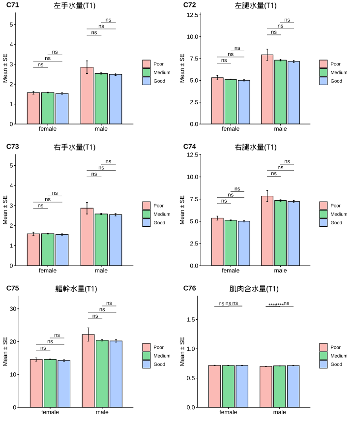

Cofit x Genensis 醫療大數據 (分析報告)
Last Updated On 2023-04-05
Highlight
1.初日體系診所(秀傳、初日、小宙)累積客戶統計：
#＃總計「累積服務客戶數」: 3155(人次)
2.初日減重門診 - 單次療程(分析人數: 710)：
- 成功減重人數(%)，總計702人(成功率:98.9%)。
- 女性:597人(成功率:98.7%)。
- 男性:105人(成功率:100.0%)。
|
|
|
(識別碼：13E159140)
Chapter 1 減重成效 - (單次療程)
本節主要分析與探討「首次減重方案：在初始狀態(baseline)和飲食紀律(diet discipline)下的成效」。
在各小節中，將逐一說明如何針對「減重方案」數據源進行資料清洗，並運用清洗後數據，篩選出最終導入分析之「資料集」(dataset)，進行「減重成效」的資料探勘、分析與解讀，並描繪出初日診所(Genesis)減重策略下的成效輪廓。
同時，此次分析將聚焦「初始狀態」、「飲食紀律」對於減重成效的影響，作為未來幫助客戶達到最佳成效的依據與利器。
1.1 資料集(Datasets)
減重門診客戶: 1231 位
控糖門診客戶: 154 位
納入標準:
- 首次方案：減重療程
- 包含「體組成」(Inbody)、「血檢報告」及「飲食紀錄」等數據資料
- 前、後測時間點誤差均在合理範圍(體組成±7days, 血檢±15days)
- 有完整初始狀態OGTT血檢報告
- 各項變數均無遺漏值(missing value)
總共: 1231 筆
排除: 521 筆
納入分析: 710 筆
1.3 整體成效分析
減重成效(各區間百分比%):
減重部分：
在女性客戶中，高達98%在療程中實現減重目的(目標設定不同)。其中將近35％表現優異(降幅>8%)，47%表現良好(降幅4~8%)。
在男性客戶中，100%在療程中實現減重目的(目標設定不同)。其中將近1％表現超乎預期(降幅>15%)、40％表現優異(降幅>8%)，45%表現良好(降幅4~8%)。
減脂部分：
在女性客戶中，高達97%在療程中實現減脂目的(目標設定不同)。其中將近27％表現超乎預期(降幅>15%)，46%表現優異(降幅>8%)，16%表現良好(降幅4~8%)。
在男性客戶中，高達97%在療程中實現減脂目的(目標設定不同)。其中將近52％表現超乎預期(降幅>15%)，29%表現優異(降幅>8%)，11%表現良好(降幅4~8%)。
|
|
|
- Weight: 體重降幅(%)
- Fat: 脂肪降幅(%)
- Muscle: 肌肉降幅(%)
體組成及血生化值成效(%):

1.4 相關分析(Correlation Analysis)
飲食紀錄(diet) x 成效
減重表現與「飲食紀律」呈現顯著正相關。(飲食紀錄完成度、綠燈率、三大營養素攝取比例、六大類食物攝取量等)。
「飲食紀錄完成度」與飲食紀律有關：
「飲食紀錄完成度」與「綠燈率」、「平均攝取熱量」、「蛋白質、脂肪攝取率」、「蔬菜、蛋豆魚肉、油脂攝取量」呈現正相關。
與「黃、紅燈率」、「碳水化合物攝取率」呈負相關。
六大類食物攝取量：
「蔬菜」、「蛋豆魚肉」、「油脂」與減重成效呈現正相關；且這三類食物彼此呈現正相關。
「水果」、「五穀雜糧」與減重成效成負相關。

初始狀態(baseline) x 成效
減重表現與初始狀態沒有顯著相關；「減脂」表現但BMI、體脂率、腰圍、空腹胰島素、HOMA-IR等初始狀態呈現負相關(i.e., 越胖的人減脂%較低)，可能是因為體脂初始值較高，而導致降幅%變小所致。
此外，根據1.2.2 整體成效分析，體脂肪降幅相較體重降幅明顯，顯示不論初始狀態如何，每一個人在單次療程中減少去的體脂重「可能」差不多(待進一步分析)。

1.5 分層分析-1: 減重成效
依據減重成效進行分層分析，分成三個組別：
- 成效「優異」: (減重>10%)
- 「良好」: (減重介於 5 ~ 10%)
- 「低於預期」: (減重< 3%)
| Poor | Medium | Good | Sum | |
|---|---|---|---|---|
| female | 80 | 353 | 74 | 507 |
| male | 9 | 57 | 20 | 86 |
| Sum | 89 | 410 | 94 | 593 |
|
Categorization: ∆weight(%) - Poor: Less than 3% - Medium: Between 5~10% - Good: More than 10% |


Summary
在我們的客群中：
成效：在體重(脂)、內臟脂肪、腰圍、糖化血色素、空腹血糖(胰島素)、胰島阻抗值等，均呈現具有顯著改善趨勢。
控糖減重策略的「成效」跟「介入前狀態」(Baseline)無關。
減重「成效」與「飲食紀律」(Obedience)有關(例如：飲食紀錄完成率、上傳照片數、綠燈率等)，且具有統計上顯著差異。
| Poor | Medium | Good | Poor | Medium | Good | 顯著差異 | |
|---|---|---|---|---|---|---|---|
| 體重(T0) | 74.33 ± 1.79 | 72.87 ± 0.69 | 71.86 ± 1.46 | 102.08 ± 6.84 | 94.52 ± 2.12 | 95.78 ± 3.27 | ns |
| BMI(T0) | 28.84 ± 0.66 | 28.16 ± 0.25 | 28.21 ± 0.52 | 32.84 ± 1.97 | 31.25 ± 0.64 | 31.98 ± 1.03 | ns |
| 體脂重(T0) | 30.32 ± 1.3 | 29.57 ± 0.48 | 29.17 ± 1 | 36.19 ± 5.27 | 31.03 ± 1.51 | 33.21 ± 2.26 | ns |
| 體脂率(T0) | 39.6 ± 0.8 | 39.85 ± 0.33 | 39.98 ± 0.63 | 34.23 ± 2.56 | 32.01 ± 0.9 | 34.12 ± 1.21 | ns |
| 骨骼肌質量指數(T0) | 6.98 ± 0.1 | 6.84 ± 0.04 | 6.83 ± 0.08 | 9 ± 0.23 | 8.95 ± 0.1 | 8.91 ± 0.15 | ns |
| 骨骼肌率(T0) | 32.89 ± 0.42 | 32.78 ± 0.18 | 32.63 ± 0.34 | 37.19 ± 1.45 | 38.53 ± 0.52 | 37.36 ± 0.7 | ns |
| 內臟脂肪面積(T0) | 145.55 ± 5.85 | 150.22 ± 2.42 | 143.61 ± 5.54 | 165 ± 22.38 | 120.41 ± 6.95 | 147.47 ± 8.24 | ns |
| 腰圍(T0) | 93.47 ± 1.53 | 93.17 ± 0.62 | 91.78 ± 1.3 | 117.08 ± 7.3 | 105.21 ± 1.84 | 107.72 ± 2.67 | ns |
| 除脂體重(T0) | 44.01 ± 0.66 | 43.31 ± 0.3 | 42.69 ± 0.61 | 65.89 ± 2.07 | 63.49 ± 0.96 | 62.58 ± 1.39 | ns |
| 基礎代謝率(T0) | 1320.67 ± 14.23 | 1305.44 ± 6.44 | 1292.16 ± 13.26 | 1793.11 ± 44.87 | 1741.56 ± 20.7 | 1721.55 ± 30.01 | ns |
| 糖化血色素(T0) | 5.55 ± 0.06 | 5.48 ± 0.02 | 5.47 ± 0.04 | 5.48 ± 0.09 | 5.88 ± 0.09 | 5.74 ± 0.11 | ns |
| 空腹血糖(T0) | 85.08 ± 1.72 | 85.93 ± 0.63 | 85.04 ± 0.95 | 85.44 ± 3.09 | 93.49 ± 2.74 | 90.7 ± 2.44 | ns |
| 空腹胰島素(T0) | 12 ± 1.02 | 12.23 ± 0.5 | 12.22 ± 1.04 | 18.65 ± 4.64 | 18.93 ± 1.74 | 15.44 ± 2.26 | ns |
| 胰島素阻抗值(T0) | 3.03 ± 0.49 | 2.63 ± 0.11 | 2.66 ± 0.25 | 3.99 ± 0.96 | 4.61 ± 0.5 | 3.61 ± 0.69 | ns |
| β細胞功能(T0) | 254.45 ± 40.61 | 232.58 ± 20.43 | 183.32 ± 21.25 | 352.24 ± 142.06 | 240.56 ± 22 | 221.81 ± 37.16 | ns |
| 三酸甘油脂(T0) | 107.85 ± 6.7 | 116.64 ± 7.99 | 106.09 ± 6.55 | 179.44 ± 47.83 | 161.44 ± 12.14 | 142.85 ± 15.74 | ns |
| 總膽固醇(T0) | 198.01 ± 4.14 | 199.15 ± 1.96 | 193.96 ± 4.94 | 189 ± 12.65 | 199.12 ± 6.03 | 196 ± 6.91 | ns |
| 高密度脂蛋白(T0) | 58.12 ± 1.75 | 55.95 ± 0.7 | 55.19 ± 1.34 | 45.49 ± 4.52 | 44.31 ± 1.13 | 45.77 ± 1.69 | ns |
| 低密度脂蛋白(T0) | 121.28 ± 3.5 | 124.32 ± 1.74 | 121.88 ± 4.36 | 120.44 ± 9.32 | 130.72 ± 5.04 | 128.6 ± 7.09 | ns |
| 尿酸(T0) | 5.08 ± 0.11 | 5.17 ± 0.07 | 5.2 ± 0.12 | 7.23 ± 0.68 | 6.83 ± 0.19 | 6.96 ± 0.4 | ns |
| 澱粉脢(T0) | 45.08 ± 2 | 45.72 ± 0.74 | 44.64 ± 1.67 | 40.33 ± 3.94 | 42.96 ± 1.98 | 40.8 ± 2.56 | ns |
| 解脂脢(T0) | 24.24 ± 1.64 | 25.47 ± 0.76 | 24.38 ± 2.3 | 32.78 ± 8.49 | 27.68 ± 2.53 | 21.25 ± 2.55 | ns |
| 體重(T1) | 73.12 ± 1.75 | 67.51 ± 0.64 | 63.69 ± 1.3 | 100.08 ± 6.62 | 87.43 ± 2.02 | 84.27 ± 2.83 | **** |
| BMI(T1) | 28.38 ± 0.65 | 26.03 ± 0.23 | 25 ± 0.46 | 32.2 ± 1.91 | 28.91 ± 0.62 | 28.14 ± 0.9 | **** |
| 體脂重(T1) | 29.4 ± 1.29 | 25.95 ± 0.46 | 23.84 ± 0.89 | 34.14 ± 5.35 | 25.89 ± 1.44 | 25.45 ± 1.99 | ** |
| 體脂率(T1) | 38.97 ± 0.85 | 37.63 ± 0.35 | 36.76 ± 0.71 | 32.81 ± 2.69 | 28.67 ± 0.97 | 29.57 ± 1.37 | ns |
| 骨骼肌質量指數(T1) | 6.92 ± 0.1 | 6.54 ± 0.04 | 6.34 ± 0.08 | 8.99 ± 0.25 | 8.66 ± 0.1 | 8.36 ± 0.12 | **** |
| 骨骼肌率(T1) | 33.16 ± 0.44 | 33.82 ± 0.19 | 34.11 ± 0.38 | 38 ± 1.5 | 40.29 ± 0.56 | 39.73 ± 0.79 | ns |
| 內臟脂肪面積(T1) | 140.31 ± 5.91 | 130.5 ± 2.37 | 116.6 ± 5.25 | 148.77 ± 21.38 | 97.87 ± 6.37 | 115.69 ± 9.95 |
|
| 腰圍(T1) | 91.96 ± 1.55 | 87.94 ± 0.59 | 84.54 ± 1.21 | 113.81 ± 7.35 | 97.89 ± 1.86 | 96.91 ± 2.53 | *** |
| 除脂體重(T1) | 43.71 ± 0.64 | 41.56 ± 0.27 | 39.85 ± 0.59 | 65.93 ± 1.83 | 61.53 ± 0.9 | 58.81 ± 1.23 | **** |
| 基礎代謝率(T1) | 1314.26 ± 13.89 | 1267.66 ± 5.91 | 1230.89 ± 12.82 | 1793.89 ± 39.59 | 1699.02 ± 19.44 | 1640.3 ± 26.65 | **** |
| 糖化血色素(T1) | 5.38 ± 0.04 | 5.22 ± 0.02 | 5.13 ± 0.03 | 5.4 ± 0.12 | 5.44 ± 0.05 | 5.34 ± 0.05 | **** |
| 空腹血糖(T1) | 80.21 ± 1.02 | 76.35 ± 0.44 | 72.32 ± 0.99 | 83.44 ± 1.71 | 78.09 ± 1.12 | 73.55 ± 1.54 | **** |
| 空腹胰島素(T1) | 13.61 ± 1.36 | 8.72 ± 0.31 | 8.02 ± 0.66 | 14.06 ± 3.12 | 12.27 ± 1.77 | 9.52 ± 1.65 | *** |
| 胰島素阻抗值(T1) | 2.78 ± 0.29 | 1.7 ± 0.06 | 1.5 ± 0.13 | 2.94 ± 0.67 | 2.48 ± 0.44 | 1.79 ± 0.34 | *** |
| β細胞功能(T1) | 321.77 ± 31.04 | 289.56 ± 30.79 | 302.9 ± 85.79 | 241.68 ± 48.91 | 303.76 ± 41.96 | 212 ± 113.55 | ns |
| 三酸甘油脂(T1) | 105.49 ± 9.55 | 93.26 ± 2.19 | 93.99 ± 2.98 | 170.89 ± 42.85 | 122.3 ± 7.69 | 123.35 ± 9.91 | ns |
| 總膽固醇(T1) | 203.2 ± 4.85 | 201.92 ± 2.39 | 200.91 ± 6.48 | 189.22 ± 14.65 | 195.93 ± 6.82 | 202.5 ± 12.1 | ns |
| 高密度脂蛋白(T1) | 54.84 ± 1.52 | 50.03 ± 0.62 | 46.08 ± 1.2 | 42.47 ± 3.76 | 41.12 ± 1.37 | 41.38 ± 1.62 | **** |
| 低密度脂蛋白(T1) | 127.14 ± 3.92 | 131.54 ± 2.06 | 133.66 ± 5.51 | 123.56 ± 8.83 | 129.95 ± 5.78 | 137.4 ± 10.93 | ns |
| 尿酸(T1) | 4.36 ± 0.1 | 4.57 ± 0.07 | 5.07 ± 0.17 | 5.56 ± 0.42 | 6.05 ± 0.22 | 6.26 ± 0.35 | *** |
| 澱粉脢(T1) | 47.65 ± 2.43 | 47.35 ± 0.82 | 45.09 ± 1.92 | 39.44 ± 4.12 | 43.05 ± 1.79 | 43.7 ± 2.9 | ns |
| 解脂脢(T1) | 30.12 ± 1.77 | 38.96 ± 1.23 | 37.43 ± 3.23 | 33.22 ± 4.3 | 35.14 ± 2.4 | 36.4 ± 5.88 |
|
| 年齡 | 36.88 ± 1.18 | 39.66 ± 0.55 | 38.45 ± 1.03 | 35.44 ± 3.19 | 41.47 ± 1.34 | 35.5 ± 1.77 | ns |
| 飲食紀錄完成率(%) | 55.39 ± 3.19 | 78.32 ± 1.45 | 80.32 ± 2.96 | 39.46 ± 9.7 | 72.91 ± 3.74 | 83.71 ± 6.84 | **** |
| 紀錄數量 | 128.45 ± 12.51 | 208.56 ± 7.35 | 217.16 ± 22.26 | 74.78 ± 21.08 | 214.06 ± 28.14 | 227.96 ± 30.48 | *** |
| 上傳照片張數 | 113.27 ± 9.82 | 169.55 ± 5.4 | 170.4 ± 11.77 | 113.84 ± 31.74 | 166.83 ± 18.1 | 194.22 ± 32.05 | *** |
| 碳水攝取率(E%) | 22.05 ± 0.93 | 18.08 ± 0.32 | 16.58 ± 0.62 | 22.81 ± 3.08 | 17.8 ± 0.85 | 14.46 ± 1.32 | **** |
| 蛋白攝取率(E%) | 26.25 ± 0.39 | 27.6 ± 0.16 | 27.98 ± 0.3 | 25.97 ± 1.16 | 27.63 ± 0.39 | 30.01 ± 0.47 | ** |
| 脂肪攝取率(E%) | 51.7 ± 0.67 | 54.32 ± 0.27 | 55.44 ± 0.46 | 51.22 ± 2.14 | 54.58 ± 0.62 | 55.53 ± 1.13 | **** |
| 總攝取熱量(日) | 570.51 ± 37.84 | 794.7 ± 16.71 | 791.67 ± 35.05 | 446.53 ± 119.09 | 827.14 ± 52.23 | 1003.72 ± 93.52 | **** |
| 綠燈率(%) | 75.83 ± 2.31 | 83.05 ± 0.78 | 88.72 ± 1.21 | 67.5 ± 8.45 | 81.89 ± 1.87 | 89.82 ± 2.46 | **** |
| 黃燈率(%) | 20.97 ± 2.09 | 14.67 ± 0.71 | 9.11 ± 0.93 | 23.81 ± 7.08 | 16.57 ± 1.77 | 8.47 ± 1.46 | **** |
| 紅燈率(%) | 3.2 ± 0.63 | 2.28 ± 0.29 | 2.18 ± 0.43 | 8.69 ± 3.96 | 1.54 ± 0.42 | 1.71 ± 1.27 | ns |
| 水果(日) | 0.05 ± 0.01 | 0.06 ± 0.01 | 0.06 ± 0.01 | 0.04 ± 0.04 | 0.05 ± 0.01 | 0.02 ± 0.01 | ns |
| 蔬菜(日) | 1.83 ± 0.15 | 2.7 ± 0.07 | 2.83 ± 0.17 | 1.24 ± 0.35 | 2.64 ± 0.21 | 3.23 ± 0.35 | **** |
| 全穀雜糧(日) | 1.18 ± 0.12 | 1.24 ± 0.04 | 1.04 ± 0.09 | 1.16 ± 0.34 | 1.35 ± 0.14 | 1.09 ± 0.2 | ns |
| 蛋豆魚肉(日) | 4.72 ± 0.33 | 7 ± 0.16 | 7.1 ± 0.33 | 3.51 ± 1 | 7.33 ± 0.47 | 9.98 ± 0.93 | **** |
| 乳品(日) | 0.04 ± 0.01 | 0.05 ± 0 | 0.03 ± 0.01 | 0.07 ± 0.04 | 0.03 ± 0 | 0.01 ± 0 | ns |
| 油脂(日) | 2.14 ± 0.16 | 3.04 ± 0.07 | 3.03 ± 0.15 | 1.67 ± 0.49 | 3.18 ± 0.22 | 3.22 ± 0.32 | **** |
| ∆體重 | 1.21 ± 0.1 | 5.36 ± 0.07 | 8.17 ± 0.2 | 2 ± 0.34 | 7.1 ± 0.2 | 11.52 ± 0.55 | **** |
| ∆BMI | 0.47 ± 0.04 | 2.13 ± 0.07 | 3.21 ± 0.08 | 0.64 ± 0.1 | 2.33 ± 0.06 | 3.84 ± 0.18 | **** |
| ∆體脂重 | 0.92 ± 0.14 | 3.61 ± 0.08 | 5.33 ± 0.2 | 2.04 ± 0.76 | 5.13 ± 0.25 | 7.76 ± 0.44 | **** |
| ∆體脂率 | 0.63 ± 0.19 | 2.22 ± 0.1 | 3.22 ± 0.24 | 1.42 ± 0.73 | 3.34 ± 0.25 | 4.54 ± 0.4 | **** |
| ∆骨骼肌質量指數 | 0.05 ± 0.02 | 0.3 ± 0.01 | 0.49 ± 0.03 | 0.01 ± 0.07 | 0.29 ± 0.03 | 0.55 ± 0.04 | **** |
| ∆骨骼肌重 | 0.21 ± 0.08 | 1.06 ± 0.04 | 1.71 ± 0.1 | -0.03 ± 0.41 | 1.23 ± 0.13 | 2.31 ± 0.25 | **** |
| ∆內臟脂肪面積 | 5.55 ± 0.9 | 18.06 ± 0.43 | 24.93 ± 1.07 | 16.23 ± 5.27 | 23.67 ± 1.29 | 37.2 ± 3.01 | **** |
| ∆腰圍 | 1.5 ± 0.28 | 5.23 ± 0.14 | 7.23 ± 0.32 | 3.27 ± 0.84 | 7.32 ± 0.42 | 10.81 ± 0.64 | **** |
| ∆除脂體重 | 0.3 ± 0.14 | 1.75 ± 0.07 | 2.84 ± 0.17 | -0.04 ± 0.7 | 1.96 ± 0.21 | 3.76 ± 0.41 | **** |
| ∆基礎代謝率 | -6.41 ± 2.96 | -37.78 ± 1.5 | -61.27 ± 3.76 | 0.78 ± 15.45 | -42.54 ± 4.54 | -81.25 ± 8.77 | **** |
| ∆糖化血色素 | 0.17 ± 0.03 | 0.26 ± 0.01 | 0.34 ± 0.03 | 0.08 ± 0.06 | 0.44 ± 0.07 | 0.4 ± 0.09 | *** |
| ∆空腹血糖 | 4.86 ± 1.32 | 9.58 ± 0.63 | 12.72 ± 1.13 | 2 ± 2.64 | 15.4 ± 2.66 | 17.15 ± 2.85 | **** |
| ∆空腹胰島素 | -1.59 ± 1.01 | 3.49 ± 0.39 | 4.19 ± 0.86 | 4.59 ± 3.02 | 6.42 ± 1.54 | 5.91 ± 2.11 | **** |
| ∆胰島素阻抗值 | 0.25 ± 0.48 | 0.94 ± 0.09 | 1.16 ± 0.21 | 1.04 ± 0.68 | 2.12 ± 0.43 | 1.81 ± 0.65 | ns |
| ∆β細胞功能 | -67.32 ± 43.24 | -54.68 ± 35.72 | -119.57 ± 80.46 | 110.57 ± 108.54 | -63.2 ± 40.17 | 9.8 ± 112.87 | ns |
| ∆三酸甘油脂 | 2.36 ± 7.15 | 23.26 ± 7.69 | 12.11 ± 6.07 | 8.56 ± 34.06 | 39.14 ± 8.86 | 19.5 ± 15.59 | ns |
| ∆總膽固醇 | -5.19 ± 3.44 | -2.83 ± 1.93 | -6.95 ± 4.18 | -0.22 ± 7.98 | 3.19 ± 5.01 | -6.5 ± 9.16 | ns |
| ∆高密度脂蛋白 | 3.28 ± 0.95 | 5.95 ± 0.47 | 9.11 ± 1.11 | 3.02 ± 2.59 | 3.19 ± 1.17 | 4.4 ± 1.12 | *** |
| ∆低密度脂蛋白 | -5.86 ± 2.96 | -7.24 ± 1.68 | -11.78 ± 3.6 | -3.11 ± 7.67 | 0.77 ± 4.06 | -8.8 ± 7.93 | ns |
| ∆尿酸 | -0.73 ± 0.1 | -0.61 ± 0.06 | -0.13 ± 0.17 | -1.68 ± 0.42 | -0.78 ± 0.19 | -0.7 ± 0.27 | ** |
| ∆澱粉脢 | 2.58 ± 1.62 | 1.71 ± 0.47 | 0.46 ± 1.16 | -0.89 ± 3.99 | 0.09 ± 1.2 | 2.9 ± 2.27 | ns |
| ∆解脂脢 | 5.89 ± 1.41 | 13.44 ± 0.99 | 13.05 ± 2.64 | 0.44 ± 9.89 | 7.46 ± 1.82 | 15.15 ± 4.52 |
|
| ∆體重(%) | 1.6 ± 0.12 | 7.36 ± 0.07 | 11.37 ± 0.14 | 1.92 ± 0.27 | 7.56 ± 0.19 | 11.98 ± 0.32 | **** |
| ∆BMI(%) | 1.58 ± 0.12 | 7.5 ± 0.15 | 11.37 ± 0.14 | 1.93 ± 0.28 | 7.53 ± 0.19 | 11.99 ± 0.32 | **** |
| ∆體脂重(%) | 3.36 ± 0.57 | 12.65 ± 0.29 | 18.7 ± 0.59 | 6.13 ± 2.14 | 17.82 ± 0.93 | 24.2 ± 1.22 | **** |
| ∆體脂率(%) | 1.81 ± 0.55 | 5.72 ± 0.28 | 8.3 ± 0.65 | 4.28 ± 2.06 | 11.1 ± 0.91 | 13.86 ± 1.35 | **** |
| ∆骨骼肌質量指數(%) | 0.69 ± 0.29 | 4.25 ± 0.13 | 7.17 ± 0.36 | 0.13 ± 0.74 | 3.21 ± 0.31 | 6.11 ± 0.41 | **** |
| ∆骨骼肌重(%) | 0.79 ± 0.32 | 4.39 ± 0.18 | 7.35 ± 0.42 | -0.23 ± 1.11 | 3.36 ± 0.33 | 6.4 ± 0.7 | **** |
| ∆內臟脂肪面積(%) | 4.44 ± 0.77 | 12.98 ± 0.35 | 19.26 ± 1 | 9.68 ± 2.94 | 21.38 ± 1.09 | 26.09 ± 2.1 | **** |
| ∆腰圍(%) | 1.62 ± 0.3 | 5.59 ± 0.14 | 7.85 ± 0.31 | 2.85 ± 0.71 | 7.04 ± 0.39 | 10.06 ± 0.55 | **** |
| ∆除脂體重(%) | 0.62 ± 0.31 | 3.92 ± 0.17 | 6.63 ± 0.39 | -0.2 ± 1.05 | 3.03 ± 0.31 | 5.91 ± 0.64 | **** |
| ∆基礎代謝率(%) | -0.45 ± 0.22 | -2.83 ± 0.12 | -4.72 ± 0.28 | 0.13 ± 0.84 | -2.4 ± 0.25 | -4.65 ± 0.5 | **** |
| ∆糖化血色素(%) | 2.84 ± 0.51 | 4.53 ± 0.21 | 6.1 ± 0.46 | 1.46 ± 1.2 | 6.86 ± 0.91 | 6.53 ± 1.35 | **** |
| ∆空腹血糖(%) | 4.52 ± 1.13 | 10.26 ± 0.59 | 14.52 ± 1.22 | 1.63 ± 3.08 | 14.21 ± 1.91 | 17.9 ± 2.7 | **** |
| ∆空腹胰島素(%) | -22.86 ± 8.03 | 13.89 ± 3.37 | 21.77 ± 5.86 | 0.27 ± 22.66 | 19.07 ± 12.21 | 34.5 ± 9.02 | **** |
| ∆胰島素阻抗值(%) | -20.34 ± 9.03 | 18.94 ± 3.94 | 29.93 ± 5.84 | -1.87 ± 26.32 | 26.12 ± 13.91 | 43.32 ± 9 | **** |
| ∆β細胞功能(%) | -68.25 ± 20.49 | -67.71 ± 16.31 | -43.49 ± 52.36 | -0.04 ± 16.03 | -30.8 ± 15.55 | -11.8 ± 56.66 | ns |
| ∆三酸甘油脂(%) | -3.84 ± 4.74 | 2.46 ± 2.15 | -2.84 ± 4.71 | -6.11 ± 17.12 | 13.99 ± 4.76 | 1.85 ± 8.1 | ns |
| ∆總膽固醇(%) | -3.17 ± 1.74 | -2.17 ± 0.94 | -3.71 ± 2.08 | -0.03 ± 4.23 | 0.71 ± 2.54 | -2.93 ± 4.44 | ns |
| ∆高密度脂蛋白(%) | 4.07 ± 1.57 | 9.52 ± 0.78 | 15.43 ± 1.76 | 4.54 ± 5.49 | 6.47 ± 2.59 | 9.28 ± 2.17 | **** |
| ∆低密度脂蛋白(%) | -6.66 ± 2.67 | -8.13 ± 1.39 | -10.81 ± 2.98 | -4.45 ± 6.59 | -0.64 ± 3.56 | -5.86 ± 5.8 | ns |
| ∆尿酸(%) | -12.97 ± 1.91 | -10.06 ± 1.18 | -1 ± 3.17 | -21.13 ± 4.75 | -9.91 ± 3.12 | -9.01 ± 3.6 | ** |
| ∆澱粉脢(%) | 7.4 ± 3.37 | 4.82 ± 0.97 | 2.18 ± 2.35 | 0.64 ± 8.75 | 2.48 ± 2.11 | 9.14 ± 6.1 | ns |
| ∆解脂脢(%) | 37.79 ± 6 | 66.93 ± 4.18 | 70.92 ± 10.61 | 54.63 ± 31.94 | 46.81 ± 8.96 | 78.52 ± 21.53 | ** |
|
Significance: Comparison: Good vs. Poor in female population. |
1.6 分層分析-2: 男性:睪固酮(Testosterone)
依據睪固酮(Testosterone)初始狀態進行分層分析，分成二個組別：
- 睪固酮低下: (小於 <350 ng/dl)
- 睪固酮正常: (大於 >350 ng/dl)
男性睪固酮分組&年齡分佈
|
|
|
相關分析(Correlation Analysis)
睪固酮(Testosterone) x 初始狀態(Baseline)
男性荷爾蒙「睪固酮」血中濃度與「體重」、「體脂」，以及「空腹血糖」、「空腹胰島素」和「胰島素抗性」(IR)具有顯著負相關。換句話說，相較於「睪固酮」濃度正常的人，「睪固酮」低下者傾向有較高的「體重」、「體脂」，「空腹血糖」、「空腹胰島素」和「胰島素抗性」(IR)也較高。


成效(Effectiveness)


1.6.0.8 成效(%)-Blood

| Low | Normal | 顯著差異 | |
|---|---|---|---|
| 人數 | 32 | 17 | |
| 體重(T0) | 97.13 ± 2.88 | 88.12 ± 2.31 |
|
| BMI(T0) | 31.73 ± 1.02 | 29.2 ± 0.64 | ns |
| 體脂重(T0) | 33.88 ± 2.18 | 25.14 ± 1.45 |
|
| 體脂率(T0) | 34.06 ± 1.27 | 28.25 ± 1.17 | ** |
| 骨骼肌質量指數(T0) | 8.84 ± 0.15 | 8.81 ± 0.11 | ns |
| 骨骼肌率(T0) | 37.26 ± 0.73 | 40.74 ± 0.69 | ** |
| 內臟脂肪面積(T0) | 139.29 ± 8.73 | 97.06 ± 5.88 |
|
| 腰圍(T0) | 108.61 ± 2.54 | 102.04 ± 4.13 | ns |
| 除脂體重(T0) | 63.25 ± 1.27 | 62.98 ± 1.38 | ns |
| 基礎代謝率(T0) | 1736.12 ± 27.5 | 1730.24 ± 29.76 | ns |
| 糖化血色素(T0) | 5.88 ± 0.15 | 5.66 ± 0.08 | ns |
| 空腹血糖(T0) | 97 ± 4.34 | 87.76 ± 2.1 | ns |
| 空腹胰島素(T0) | 17.57 ± 1.61 | 16.29 ± 2.2 | ns |
| 胰島素阻抗值(T0) | 4.44 ± 0.58 | 3.55 ± 0.48 | ns |
| β細胞功能(T0) | 211.44 ± 18.67 | 270.04 ± 42.33 | ns |
| 三酸甘油脂(T0) | 194.81 ± 19.31 | 153.35 ± 19.96 | ns |
| 總膽固醇(T0) | 195.16 ± 6.41 | 205.59 ± 11.01 | ns |
| 高密度脂蛋白(T0) | 44.6 ± 1.95 | 43.38 ± 2.26 | ns |
| 低密度脂蛋白(T0) | 119.84 ± 5.21 | 142.65 ± 9.64 | ns |
| 解脂脢(T0) | 27.84 ± 2.87 | 23.29 ± 3.21 | ns |
| 體重(T1) | 90.53 ± 2.85 | 81.61 ± 2.42 | ns |
| BMI(T1) | 29.6 ± 1.03 | 27.04 ± 0.67 | ns |
| 體脂重(T1) | 29.35 ± 2.15 | 20.48 ± 1.49 | ** |
| 體脂率(T1) | 31.42 ± 1.37 | 24.69 ± 1.26 | ** |
| 骨骼肌質量指數(T1) | 8.55 ± 0.15 | 8.53 ± 0.12 | ns |
| 骨骼肌率(T1) | 38.64 ± 0.78 | 42.64 ± 0.72 | ** |
| 內臟脂肪面積(T1) | 111.12 ± 7.72 | 79.74 ± 5.87 |
|
| 腰圍(T1) | 101.91 ± 2.61 | 94.78 ± 4.52 |
|
| 除脂體重(T1) | 61.18 ± 1.22 | 61.14 ± 1.37 | ns |
| 基礎代謝率(T1) | 1691.44 ± 26.39 | 1690.47 ± 29.47 | ns |
| 糖化血色素(T1) | 5.41 ± 0.08 | 5.38 ± 0.07 | ns |
| 空腹血糖(T1) | 77.28 ± 1.69 | 76.29 ± 2.21 | ns |
| 空腹胰島素(T1) | 10.49 ± 1.1 | 11.68 ± 2.55 | ns |
| 胰島素阻抗值(T1) | 2.04 ± 0.22 | 2.33 ± 0.55 | ns |
| β細胞功能(T1) | 265.53 ± 49.99 | 235.26 ± 76.33 | ns |
| 三酸甘油脂(T1) | 152.41 ± 13.93 | 121 ± 14.7 | ns |
| 總膽固醇(T1) | 198.19 ± 8.63 | 212.24 ± 15.26 | ns |
| 高密度脂蛋白(T1) | 41.85 ± 1.93 | 39.31 ± 2.08 | ns |
| 低密度脂蛋白(T1) | 129.09 ± 7.8 | 147.18 ± 12.22 | ns |
| 解脂脢(T1) | 42 ± 6.4 | 32.35 ± 5.92 | ns |
| 年齡 | 41.66 ± 2.26 | 35.76 ± 1.9 | ns |
| 飲食紀錄完成率(%) | 67.91 ± 5.6 | 63.75 ± 8.83 | ns |
| 紀錄數量 | 156.26 ± 26.67 | 217.74 ± 49.81 | ns |
| 上傳照片張數 | 152.54 ± 26.84 | 124.17 ± 24.13 | ns |
| 碳水攝取率(E%) | 17.51 ± 1.1 | 18 ± 1.91 | ns |
| 蛋白攝取率(E%) | 27.46 ± 0.47 | 28.31 ± 0.76 | ns |
| 脂肪攝取率(E%) | 55.02 ± 0.9 | 53.69 ± 1.35 | ns |
| 總攝取熱量(日) | 798.35 ± 79.48 | 733.12 ± 118.34 | ns |
| 綠燈率(%) | 83.6 ± 2.52 | 76.45 ± 5 | ns |
| 黃燈率(%) | 12.83 ± 1.63 | 22.93 ± 5.05 | ns |
| 紅燈率(%) | 3.57 ± 1.41 | 0.61 ± 0.42 | ns |
| 水果(日) | 0.03 ± 0.01 | 0.07 ± 0.03 | ns |
| 蔬菜(日) | 2.49 ± 0.3 | 2.42 ± 0.43 | ns |
| 全穀雜糧(日) | 1.26 ± 0.18 | 1 ± 0.21 | ns |
| 蛋豆魚肉(日) | 7.06 ± 0.73 | 6.8 ± 1.13 | ns |
| 乳品(日) | 0.02 ± 0.01 | 0.03 ± 0.01 | ns |
| 油脂(日) | 2.91 ± 0.31 | 2.49 ± 0.42 | ns |
| ∆體重 | 6.6 ± 0.51 | 6.51 ± 0.54 | ns |
| ∆BMI | 2.14 ± 0.16 | 2.16 ± 0.18 | ns |
| ∆體脂重 | 4.53 ± 0.33 | 4.66 ± 0.57 | ns |
| ∆體脂率 | 2.64 ± 0.27 | 3.56 ± 0.56 | ns |
| ∆骨骼肌質量指數 | -0.29 ± 0.04 | -0.28 ± 0.04 | ns |
| ∆骨骼肌重 | -1.27 ± 0.22 | -1.15 ± 0.21 | ns |
| ∆內臟脂肪面積 | 21.67 ± 1.66 | 24.81 ± 2.59 | ns |
| ∆腰圍 | 6.7 ± 0.63 | 7.26 ± 0.72 | ns |
| ∆除脂體重 | 2.07 ± 0.35 | 1.84 ± 0.35 | ns |
| ∆基礎代謝率 | -44.69 ± 7.6 | -39.76 ± 7.33 | ns |
| ∆糖化血色素 | 0.47 ± 0.12 | 0.28 ± 0.06 | ns |
| ∆空腹血糖 | 19.72 ± 4.15 | 11.47 ± 3.14 | ns |
| ∆空腹胰島素 | 6.61 ± 1.63 | 4.61 ± 1.93 | ns |
| ∆胰島素阻抗值 | 2.4 ± 0.58 | 1.22 ± 0.44 | ns |
| ∆β細胞功能 | 54.08 ± 47.6 | -34.78 ± 72.16 | ns |
| ∆三酸甘油脂 | 42.41 ± 14.69 | 32.35 ± 17.93 | ns |
| ∆總膽固醇 | -3.03 ± 7.37 | -6.65 ± 12.9 | ns |
| ∆高密度脂蛋白 | -2.75 ± 1.54 | -4.06 ± 1.82 | ns |
| ∆低密度脂蛋白 | -9.25 ± 6.51 | -4.53 ± 10.47 | ns |
| ∆解脂脢 | 14.16 ± 5.13 | 9.06 ± 3.34 | ns |
| ∆體重(%) | 6.9 ± 0.54 | 7.48 ± 0.64 | ns |
| ∆BMI(%) | 6.9 ± 0.54 | 7.45 ± 0.64 | ns |
| ∆體脂重(%) | 14.59 ± 1.21 | 19.36 ± 2.35 | ns |
| ∆體脂率(%) | 8.35 ± 0.93 | 13.01 ± 2.1 |
|
| ∆骨骼肌質量指數(%) | -3.31 ± 0.45 | -3.22 ± 0.5 | ns |
| ∆骨骼肌重(%) | -3.47 ± 0.6 | -3.17 ± 0.59 | ns |
| ∆內臟脂肪面積(%) | 16.44 ± 1.12 | 26.06 ± 2.27 |
|
| ∆腰圍(%) | 6.25 ± 0.58 | 7.4 ± 0.74 | ns |
| ∆除脂體重(%) | 3.21 ± 0.54 | 2.9 ± 0.55 | ns |
| ∆基礎代謝率(%) | -2.53 ± 0.43 | -2.29 ± 0.42 | ns |
| ∆糖化血色素(%) | 7.18 ± 1.36 | 4.87 ± 1.06 | ns |
| ∆空腹血糖(%) | 18.04 ± 2.32 | 12.14 ± 3.58 | ns |
| ∆空腹胰島素(%) | 29.47 ± 7.08 | 32.48 ± 9 | ns |
| ∆胰島素阻抗值(%) | 40.95 ± 6.53 | 37.56 ± 10.17 | ns |
| ∆β細胞功能(%) | 43.26 ± 21.19 | -4.89 ± 34.92 | ns |
| ∆三酸甘油脂(%) | 14.57 ± 5.08 | 7.49 ± 11.35 | ns |
| ∆總膽固醇(%) | -2.6 ± 3.85 | -4.07 ± 6.04 | ns |
| ∆高密度脂蛋白(%) | -5.01 ± 3.44 | -7.95 ± 3.99 | ns |
| ∆低密度脂蛋白(%) | -9.23 ± 6.05 | -5.07 ± 7.34 | ns |
| ∆解脂脢(%) | 58.3 ± 14.63 | 41.09 ± 12.38 | ns |
|
Significance: Comparison: Testosterone in male population. |
1.7 分層分析-3: 尿酸(Serum Uric Acid)
相關分析(Correlation Analysis)
| High>High | High>Normal | Normal>High | Normal>Normal | Sum | |
|---|---|---|---|---|---|
| female | 37 | 95 | 33 | 437 | 602 |
| male | 24 | 24 | 4 | 53 | 105 |
| Sum | 61 | 119 | 37 | 490 | 707 |
|
|


成效(Effectiveness)


1.7.0.8 成效(%)-Blood

| Normal>Normal | Normal>High | High>Normal | High>High | Normal>Normal | Normal>High | High>Normal | High>High | |
|---|---|---|---|---|---|---|---|---|
| 體重(T0) | 70.34 ± 0.57 | 74.36 ± 2.15 | 79.4 ± 1.52 | 83.58 ± 2.33 | 92.14 ± 2.32 | 98.12 ± 9.94 | 99.62 ± 3.12 | 104.85 ± 4.43 |
| BMI(T0) | 27.23 ± 0.21 | 28.8 ± 0.7 | 30.72 ± 0.54 | 32.53 ± 0.95 | 30.77 ± 0.83 | 32.58 ± 2.96 | 32.67 ± 0.89 | 34.36 ± 1.36 |
| 體脂重(T0) | 27.52 ± 0.4 | 31.27 ± 1.54 | 34.43 ± 1.06 | 36.77 ± 1.73 | 29.84 ± 1.68 | 32.88 ± 5.57 | 35.26 ± 2.48 | 39.87 ± 3.24 |
| 體脂率(T0) | 38.48 ± 0.29 | 41.38 ± 0.89 | 42.59 ± 0.59 | 43.39 ± 1.05 | 31.57 ± 0.9 | 32.9 ± 2.28 | 34.63 ± 1.39 | 36.79 ± 1.54 |
| 骨骼肌質量指數(T0) | 6.76 ± 0.04 | 6.84 ± 0.1 | 7.16 ± 0.08 | 7.35 ± 0.13 | 8.85 ± 0.11 | 9.18 ± 0.56 | 9 ± 0.12 | 9.06 ± 0.16 |
| 骨骼肌率(T0) | 33.46 ± 0.16 | 31.91 ± 0.47 | 31.43 ± 0.31 | 31.14 ± 0.59 | 38.72 ± 0.52 | 37.96 ± 1.18 | 36.98 ± 0.81 | 35.81 ± 0.87 |
| 內臟脂肪面積(T0) | 136.99 ± 2.1 | 160.36 ± 7.92 | 167.49 ± 4.35 | 184.45 ± 6.94 | 120.37 ± 5.96 | 105.25 ± 15.31 | 140.73 ± 11.75 | 155.38 ± 11.58 |
| 腰圍(T0) | 90.53 ± 0.51 | 95.03 ± 1.9 | 98.75 ± 1.34 | 102.74 ± 1.99 | 103.05 ± 1.73 | 107.4 ± 7.52 | 112.5 ± 3.36 | 114.81 ± 3.48 |
| 除脂體重(T0) | 42.82 ± 0.26 | 43.09 ± 0.79 | 44.97 ± 0.6 | 46.81 ± 1.01 | 62.3 ± 1 | 65.25 ± 4.67 | 64.37 ± 1.22 | 64.99 ± 1.59 |
| 基礎代謝率(T0) | 1294.89 ± 5.52 | 1300.88 ± 17.17 | 1341.24 ± 12.96 | 1381 ± 21.82 | 1715.68 ± 21.53 | 1779.25 ± 100.73 | 1760.38 ± 26.26 | 1773.58 ± 34.44 |
| 糖化血色素(T0) | 5.46 ± 0.02 | 5.5 ± 0.08 | 5.57 ± 0.04 | 5.61 ± 0.07 | 5.77 ± 0.07 | 6.42 ± 0.67 | 5.7 ± 0.08 | 5.87 ± 0.17 |
| 空腹血糖(T0) | 85.71 ± 0.61 | 86.61 ± 1.97 | 85.64 ± 1.11 | 85.08 ± 1.47 | 91.42 ± 1.71 | 121 ± 31.38 | 89.58 ± 2.1 | 90.21 ± 3.23 |
| 空腹胰島素(T0) | 10.61 ± 0.34 | 13.15 ± 1.49 | 16.08 ± 1.08 | 20.26 ± 3.03 | 16.73 ± 1.49 | 17.4 ± 5.91 | 20.28 ± 2.71 | 20 ± 2.61 |
| 胰島素阻抗值(T0) | 2.38 ± 0.11 | 2.86 ± 0.35 | 3.44 ± 0.24 | 4.34 ± 0.66 | 3.87 ± 0.35 | 6.38 ± 3.65 | 4.58 ± 0.74 | 4.7 ± 0.74 |
| β細胞功能(T0) | 209.47 ± 17.61 | 219.97 ± 27.81 | 290.17 ± 27.06 | 343.04 ± 46.89 | 219.39 ± 22.21 | 140.65 ± 41.86 | 313.91 ± 58.03 | 316.58 ± 44.44 |
| 三酸甘油脂(T0) | 106.97 ± 6.14 | 98.73 ± 8.67 | 129.91 ± 7.39 | 156.7 ± 27.07 | 151.4 ± 11.2 | 144 ± 15.67 | 179.12 ± 22.58 | 151.29 ± 17.17 |
| 總膽固醇(T0) | 198.69 ± 1.77 | 202.42 ± 7.93 | 196.17 ± 4.32 | 191.08 ± 5.08 | 197.79 ± 4.79 | 194 ± 17.18 | 187.92 ± 9.29 | 196.67 ± 9.25 |
| 高密度脂蛋白(T0) | 57.77 ± 0.65 | 55.94 ± 1.98 | 51.28 ± 1.14 | 49.86 ± 2.39 | 44.85 ± 0.88 | 49.5 ± 5.35 | 43.74 ± 1.81 | 44.28 ± 2.58 |
| 低密度脂蛋白(T0) | 122.21 ± 1.51 | 130.85 ± 7.14 | 126.26 ± 3.94 | 120.3 ± 5.04 | 131.57 ± 4.02 | 127.25 ± 17.61 | 118.12 ± 7.11 | 127.96 ± 8.57 |
| 尿酸(T0) | 4.69 ± 0.04 | 5.25 ± 0.1 | 6.68 ± 0.08 | 7.11 ± 0.14 | 5.76 ± 0.11 | 6.3 ± 0.35 | 7.91 ± 0.17 | 8.62 ± 0.26 |
| 澱粉脢(T0) | 45.84 ± 0.7 | 46.12 ± 2.63 | 42.46 ± 1.43 | 43.81 ± 2.29 | 42.23 ± 1.73 | 40.25 ± 3.94 | 41.38 ± 3.7 | 41.83 ± 3.17 |
| 解脂脢(T0) | 24.96 ± 0.69 | 24.97 ± 1.81 | 24.17 ± 1.69 | 25.78 ± 2.33 | 23.57 ± 2.29 | 31.25 ± 6.7 | 30.75 ± 4.26 | 25.71 ± 3.82 |
| 體重(T1) | 65.84 ± 0.54 | 67.8 ± 1.99 | 74.43 ± 1.53 | 77.39 ± 2.16 | 85.22 ± 2.26 | 89.52 ± 10.23 | 93.47 ± 3.06 | 97.2 ± 4.34 |
| BMI(T1) | 25.48 ± 0.2 | 26.26 ± 0.66 | 28.79 ± 0.54 | 29.6 ± 0.86 | 28.46 ± 0.8 | 29.74 ± 3.15 | 30.67 ± 0.89 | 31.85 ± 1.34 |
| 體脂重(T1) | 24.47 ± 0.38 | 27.1 ± 1.48 | 31.05 ± 1.07 | 32.62 ± 1.65 | 24.89 ± 1.64 | 27.02 ± 5.68 | 31.15 ± 2.48 | 34.42 ± 3.19 |
| 體脂率(T1) | 36.46 ± 0.3 | 39.21 ± 1.06 | 40.77 ± 0.67 | 41.39 ± 1.06 | 28.24 ± 1 | 29.3 ± 2.88 | 32.43 ± 1.46 | 33.92 ± 1.73 |
| 骨骼肌質量指數(T1) | 6.51 ± 0.03 | 6.42 ± 0.1 | 6.87 ± 0.08 | 7.07 ± 0.12 | 8.56 ± 0.12 | 8.78 ± 0.57 | 8.69 ± 0.12 | 8.79 ± 0.16 |
| 骨骼肌率(T1) | 34.4 ± 0.16 | 32.83 ± 0.57 | 32.3 ± 0.35 | 32.06 ± 0.57 | 40.48 ± 0.57 | 39.99 ± 1.59 | 38.12 ± 0.85 | 37.27 ± 0.97 |
| 內臟脂肪面積(T1) | 119.95 ± 2.02 | 144.71 ± 7.82 | 152.86 ± 4.81 | 159.44 ± 7.59 | 98.88 ± 5.41 | 88.43 ± 13.34 | 117.27 ± 10.26 | 138.01 ± 13.02 |
| 腰圍(T1) | 86.06 ± 0.49 | 89.08 ± 1.88 | 94.39 ± 1.38 | 96.8 ± 2.01 | 95.5 ± 1.68 | 100.35 ± 9.12 | 107.04 ± 3.41 | 107.35 ± 3.6 |
| 除脂體重(T1) | 41.36 ± 0.24 | 40.7 ± 0.76 | 43.39 ± 0.6 | 44.76 ± 0.84 | 60.33 ± 0.97 | 62.5 ± 4.88 | 62.32 ± 1.09 | 62.79 ± 1.54 |
| 基礎代謝率(T1) | 1263.44 ± 5.28 | 1249.21 ± 16.38 | 1307.14 ± 13.07 | 1336.76 ± 18.18 | 1673.04 ± 20.93 | 1720.25 ± 105.36 | 1716.17 ± 23.55 | 1726 ± 33.2 |
| 糖化血色素(T1) | 5.23 ± 0.02 | 5.12 ± 0.05 | 5.32 ± 0.03 | 5.31 ± 0.05 | 5.42 ± 0.05 | 5.75 ± 0.32 | 5.44 ± 0.06 | 5.37 ± 0.07 |
| 空腹血糖(T1) | 77.23 ± 0.43 | 70.33 ± 1.4 | 79.35 ± 0.75 | 75.59 ± 1.79 | 78.09 ± 1.15 | 78 ± 3.46 | 81.08 ± 1.74 | 76.75 ± 2.16 |
| 空腹胰島素(T1) | 8.28 ± 0.27 | 8.16 ± 1.21 | 14.17 ± 1.02 | 14.22 ± 1.97 | 10.25 ± 0.99 | 4.49 ± 1.24 | 19.45 ± 3.85 | 14.33 ± 2.61 |
| 胰島素阻抗值(T1) | 1.64 ± 0.06 | 1.47 ± 0.23 | 2.84 ± 0.21 | 2.8 ± 0.43 | 2.03 ± 0.2 | 1.18 ± 0.36 | 4.13 ± 0.99 | 2.78 ± 0.51 |
| β細胞功能(T1) | 218.51 ± 19.43 | 561.26 ± 169.4 | 343.55 ± 28.79 | 697.89 ± 197.74 | 221.2 ± 54.77 | 150.32 ± 27.47 | 397.45 ± 50.43 | 364.73 ± 88.01 |
| 三酸甘油脂(T1) | 90.19 ± 2.34 | 98.7 ± 6.1 | 105.37 ± 5.26 | 112.14 ± 5.78 | 112.42 ± 6.46 | 128.5 ± 1.04 | 148.12 ± 16.93 | 144.21 ± 14.9 |
| 總膽固醇(T1) | 204.19 ± 2.14 | 209.67 ± 9.9 | 189.09 ± 4.17 | 190.51 ± 6.64 | 195.09 ± 6.66 | 212.75 ± 47.32 | 180.67 ± 6.94 | 195.62 ± 11.04 |
| 高密度脂蛋白(T1) | 52.49 ± 0.59 | 44.74 ± 1.4 | 46.59 ± 0.87 | 42.94 ± 1.91 | 42.2 ± 1.3 | 43.4 ± 3.77 | 39.99 ± 1.54 | 38.24 ± 2.14 |
| 低密度脂蛋白(T1) | 131.28 ± 1.81 | 142.33 ± 9.13 | 122.82 ± 3.66 | 125.24 ± 5.67 | 130.92 ± 5.54 | 146.25 ± 40.98 | 116.21 ± 5.36 | 130.92 ± 9.54 |
| 尿酸(T1) | 4.14 ± 0.04 | 6.85 ± 0.16 | 4.83 ± 0.06 | 7.04 ± 0.17 | 5.03 ± 0.13 | 7.75 ± 0.49 | 5.98 ± 0.11 | 8.25 ± 0.23 |
| 澱粉脢(T1) | 47.76 ± 0.81 | 43.3 ± 2.98 | 44.95 ± 1.5 | 45.16 ± 2.2 | 42.04 ± 1.75 | 51.75 ± 5.23 | 45.12 ± 4.64 | 40.88 ± 2.83 |
| 解脂脢(T1) | 36.87 ± 1.05 | 37.03 ± 3.27 | 34.95 ± 2.28 | 37.78 ± 4.04 | 30.66 ± 2.54 | 54.5 ± 13.68 | 47.21 ± 7.94 | 31.29 ± 3.14 |
| 年齡 | 39.32 ± 0.47 | 38.58 ± 1.84 | 38.55 ± 1.26 | 39.84 ± 1.89 | 40.47 ± 1.39 | 42.25 ± 1.65 | 41.21 ± 2.58 | 34.46 ± 2.28 |
| 飲食紀錄完成率(%) | 73.18 ± 1.38 | 86.27 ± 3.18 | 67.49 ± 3.21 | 83.15 ± 4.24 | 73.26 ± 4.09 | 71.06 ± 21.46 | 62.27 ± 6.98 | 67.68 ± 6.23 |
| 紀錄數量 | 191.16 ± 6.47 | 293.34 ± 47.74 | 148.58 ± 10.46 | 228.18 ± 27.35 | 207.21 ± 23.63 | 209.26 ± 93.27 | 190.22 ± 52.3 | 131.09 ± 22.64 |
| 上傳照片張數 | 156.12 ± 4.85 | 209.92 ± 20.66 | 133.75 ± 10.16 | 164.39 ± 14.6 | 162.11 ± 17.28 | 206.06 ± 78.11 | 155.7 ± 32.34 | 135 ± 19.97 |
| 碳水攝取率(E%) | 19.33 ± 0.33 | 16.02 ± 0.9 | 19.7 ± 0.68 | 15.79 ± 0.95 | 19.07 ± 0.92 | 13.21 ± 2.98 | 18.18 ± 1.64 | 15.05 ± 1.11 |
| 蛋白攝取率(E%) | 27.24 ± 0.16 | 27.88 ± 0.37 | 26.75 ± 0.26 | 28.04 ± 0.43 | 27.62 ± 0.41 | 29.13 ± 0.84 | 27.32 ± 0.61 | 28.57 ± 0.64 |
| 脂肪攝取率(E%) | 53.43 ± 0.26 | 56.1 ± 0.72 | 53.55 ± 0.52 | 56.17 ± 0.74 | 53.31 ± 0.65 | 57.66 ± 3.53 | 54.5 ± 1.28 | 56.38 ± 0.77 |
| 總攝取熱量(日) | 737.34 ± 15.92 | 898.16 ± 42.23 | 682.58 ± 35.66 | 852.34 ± 44.52 | 846.19 ± 56.64 | 777.87 ± 267.41 | 719.69 ± 94.19 | 764.97 ± 75.69 |
| 綠燈率(%) | 81.01 ± 0.78 | 90.02 ± 1.48 | 79.61 ± 1.62 | 86.8 ± 2.35 | 80.47 ± 2.19 | 89.86 ± 5.06 | 81.74 ± 4.02 | 83.61 ± 3.46 |
| 黃燈率(%) | 16.56 ± 0.7 | 8.64 ± 1.2 | 16.76 ± 1.41 | 11.62 ± 2.22 | 17.09 ± 1.89 | 10.14 ± 5.06 | 15.33 ± 3.39 | 12.93 ± 2.43 |
| 紅燈率(%) | 2.43 ± 0.22 | 1.34 ± 0.47 | 3.63 ± 0.81 | 1.58 ± 0.6 | 2.44 ± 0.73 | 0 ± 0 | 2.94 ± 0.94 | 3.47 ± 1.85 |
| 水果(日) | 0.06 ± 0.01 | 0.05 ± 0.01 | 0.06 ± 0.01 | 0.02 ± 0.01 | 0.03 ± 0.01 | 0.04 ± 0.02 | 0.04 ± 0.02 | 0.05 ± 0.02 |
| 蔬菜(日) | 2.49 ± 0.07 | 3.24 ± 0.21 | 2.13 ± 0.13 | 2.95 ± 0.2 | 2.55 ± 0.22 | 3.23 ± 1.1 | 2.27 ± 0.33 | 2.5 ± 0.31 |
| 全穀雜糧(日) | 1.26 ± 0.04 | 1.1 ± 0.12 | 1.24 ± 0.09 | 0.98 ± 0.1 | 1.54 ± 0.15 | 0.59 ± 0.26 | 1.1 ± 0.18 | 0.84 ± 0.11 |
| 蛋豆魚肉(日) | 6.37 ± 0.15 | 8.07 ± 0.41 | 5.82 ± 0.33 | 7.83 ± 0.46 | 7.57 ± 0.52 | 7.48 ± 2.58 | 6.26 ± 0.88 | 7.25 ± 0.78 |
| 乳品(日) | 0.05 ± 0 | 0.04 ± 0.01 | 0.05 ± 0.01 | 0.03 ± 0.01 | 0.03 ± 0.01 | 0.01 ± 0.01 | 0.04 ± 0.02 | 0.02 ± 0.01 |
| 油脂(日) | 2.83 ± 0.07 | 3.52 ± 0.18 | 2.56 ± 0.14 | 3.29 ± 0.21 | 3.06 ± 0.22 | 2.5 ± 0.92 | 2.78 ± 0.41 | 2.73 ± 0.28 |
| ∆體重 | 4.5 ± 0.11 | 6.56 ± 0.48 | 4.97 ± 0.23 | 6.19 ± 0.41 | 6.92 ± 0.42 | 8.6 ± 1.69 | 6.15 ± 0.64 | 7.65 ± 0.7 |
| ∆BMI | 1.75 ± 0.04 | 2.54 ± 0.18 | 1.93 ± 0.09 | 2.93 ± 0.58 | 2.31 ± 0.15 | 2.84 ± 0.5 | 2 ± 0.2 | 2.51 ± 0.23 |
| ∆體脂重 | 3.05 ± 0.09 | 4.17 ± 0.33 | 3.39 ± 0.2 | 4.15 ± 0.36 | 4.95 ± 0.32 | 5.85 ± 0.55 | 4.1 ± 0.6 | 5.45 ± 0.61 |
| ∆體脂率 | 2.03 ± 0.09 | 2.18 ± 0.37 | 1.83 ± 0.2 | 1.99 ± 0.47 | 3.33 ± 0.3 | 3.6 ± 0.7 | 2.2 ± 0.45 | 2.87 ± 0.44 |
| ∆骨骼肌質量指數 | 0.25 ± 0.01 | 0.42 ± 0.04 | 0.29 ± 0.02 | 0.29 ± 0.04 | 0.29 ± 0.04 | 0.4 ± 0.07 | 0.32 ± 0.05 | 0.27 ± 0.05 |
| ∆骨骼肌重 | 0.89 ± 0.04 | 1.48 ± 0.19 | 0.95 ± 0.08 | 1.26 ± 0.2 | 1.22 ± 0.16 | 1.55 ± 0.8 | 1.25 ± 0.24 | 1.41 ± 0.24 |
| ∆內臟脂肪面積 | 16 ± 0.45 | 15.05 ± 2.21 | 14.63 ± 1.01 | 18.34 ± 1.66 | 24.08 ± 2.13 | 23.6 ± 1.63 | 23.17 ± 2.99 | 23.91 ± 2.77 |
| ∆腰圍 | 4.47 ± 0.14 | 5.95 ± 0.66 | 4.37 ± 0.3 | 5.94 ± 0.64 | 7.55 ± 0.5 | 7.05 ± 2.13 | 5.46 ± 0.73 | 7.47 ± 0.87 |
| ∆除脂體重 | 1.45 ± 0.07 | 2.39 ± 0.32 | 1.58 ± 0.14 | 2.05 ± 0.35 | 1.97 ± 0.28 | 2.75 ± 1.16 | 2.05 ± 0.39 | 2.2 ± 0.37 |
| ∆基礎代謝率 | -31.45 ± 1.41 | -51.67 ± 6.95 | -34.11 ± 3.09 | -44.24 ± 7.46 | -42.64 ± 6.07 | -59 ± 25.12 | -44.21 ± 8.36 | -47.58 ± 8.03 |
| ∆糖化血色素 | 0.23 ± 0.01 | 0.38 ± 0.06 | 0.25 ± 0.02 | 0.29 ± 0.05 | 0.35 ± 0.05 | 0.68 ± 0.39 | 0.26 ± 0.05 | 0.5 ± 0.15 |
| ∆空腹血糖 | 8.48 ± 0.55 | 16.27 ± 2.3 | 6.29 ± 1.2 | 9.49 ± 1.49 | 13.32 ± 1.84 | 43 ± 29.59 | 8.5 ± 1.52 | 13.46 ± 3.11 |
| ∆空腹胰島素 | 2.32 ± 0.3 | 5 ± 1.33 | 1.91 ± 1.02 | 6.04 ± 2.56 | 6.47 ± 1.36 | 7.94 ± 2.84 | 0.83 ± 2.14 | 5.67 ± 2.84 |
| ∆胰島素阻抗值 | 0.74 ± 0.1 | 1.39 ± 0.3 | 0.6 ± 0.24 | 1.54 ± 0.56 | 1.84 ± 0.32 | 5.2 ± 3.32 | 0.45 ± 0.44 | 1.93 ± 0.77 |
| ∆β細胞功能 | -9.04 ± 26.12 | -341.29 ± 157.39 | -53.39 ± 27.98 | -354.85 ± 196.84 | -1.82 ± 56.04 | -9.68 ± 46.7 | -83.53 ± 54.79 | -48.15 ± 70.25 |
| ∆三酸甘油脂 | 16.78 ± 5.97 | 0.03 ± 6.68 | 24.54 ± 6.08 | 44.57 ± 25.11 | 38.98 ± 9.46 | 15.5 ± 16.19 | 31 ± 13.75 | 7.08 ± 13.28 |
| ∆總膽固醇 | -5.5 ± 1.61 | -7.24 ± 7.11 | 7.07 ± 3.74 | 0.57 ± 4.76 | 2.7 ± 4.8 | -18.75 ± 33.06 | 7.25 ± 4.48 | 1.04 ± 9.07 |
| ∆高密度脂蛋白 | 5.28 ± 0.42 | 11.2 ± 1.82 | 4.69 ± 0.8 | 6.92 ± 1.44 | 2.65 ± 1.22 | 6.1 ± 4.15 | 3.75 ± 1.17 | 6.05 ± 1.32 |
| ∆低密度脂蛋白 | -9.06 ± 1.38 | -11.48 ± 7 | 3.44 ± 3.27 | -4.95 ± 4.21 | 0.64 ± 3.99 | -19 ± 27.35 | 1.92 ± 3.88 | -2.96 ± 8.06 |
| ∆尿酸 | -0.55 ± 0.04 | 1.6 ± 0.19 | -1.84 ± 0.09 | -0.07 ± 0.22 | -0.73 ± 0.15 | 1.45 ± 0.52 | -1.93 ± 0.13 | -0.37 ± 0.33 |
| ∆澱粉脢 | 1.92 ± 0.47 | -2.82 ± 1.54 | 2.48 ± 0.96 | 1.35 ± 1.13 | -0.19 ± 1.43 | 11.5 ± 6.36 | 3.75 ± 1.96 | -0.96 ± 1.31 |
| ∆解脂脢 | 11.91 ± 0.83 | 12.06 ± 3.1 | 10.78 ± 2.05 | 12 ± 3.13 | 7.09 ± 2.35 | 23.25 ± 16.38 | 16.46 ± 6.06 | 5.58 ± 3.28 |
| ∆體重(%) | 6.41 ± 0.14 | 8.78 ± 0.54 | 6.42 ± 0.31 | 7.37 ± 0.42 | 7.57 ± 0.44 | 9.05 ± 1.92 | 6.2 ± 0.59 | 7.44 ± 0.66 |
| ∆BMI(%) | 6.41 ± 0.14 | 8.78 ± 0.54 | 6.43 ± 0.31 | 8.56 ± 1.26 | 7.56 ± 0.44 | 9.04 ± 1.93 | 6.16 ± 0.59 | 7.44 ± 0.66 |
| ∆體脂重(%) | 11.37 ± 0.33 | 13.81 ± 1.08 | 10.62 ± 0.68 | 11.6 ± 0.97 | 17.88 ± 1.22 | 19.34 ± 3.47 | 12.18 ± 1.66 | 15.2 ± 1.75 |
| ∆體脂率(%) | 5.37 ± 0.27 | 5.54 ± 0.94 | 4.55 ± 0.53 | 4.56 ± 0.89 | 11.24 ± 1.06 | 11.44 ± 2.79 | 6.49 ± 1.36 | 8.5 ± 1.4 |
| ∆骨骼肌質量指數(%) | 3.6 ± 0.14 | 6.12 ± 0.62 | 4.11 ± 0.31 | 3.69 ± 0.67 | 3.27 ± 0.43 | 4.41 ± 0.85 | 3.49 ± 0.51 | 2.99 ± 0.48 |
| ∆骨骼肌重(%) | 3.76 ± 0.16 | 6.24 ± 0.75 | 3.9 ± 0.34 | 4.38 ± 1.08 | 3.42 ± 0.45 | 4.26 ± 2.2 | 3.33 ± 0.64 | 3.77 ± 0.63 |
| ∆內臟脂肪面積(%) | 12.58 ± 0.39 | 10.37 ± 1.58 | 9.65 ± 0.75 | 10.96 ± 1.14 | 20.96 ± 1.7 | 23.88 ± 5.02 | 17.12 ± 1.6 | 16.9 ± 2.11 |
| ∆腰圍(%) | 4.91 ± 0.15 | 6.27 ± 0.64 | 4.5 ± 0.3 | 5.79 ± 0.63 | 7.33 ± 0.47 | 6.92 ± 2.17 | 4.91 ± 0.63 | 6.64 ± 0.79 |
| ∆除脂體重(%) | 3.34 ± 0.15 | 5.47 ± 0.7 | 3.53 ± 0.32 | 3.91 ± 1.03 | 3.11 ± 0.43 | 4.28 ± 1.82 | 3.09 ± 0.58 | 3.34 ± 0.56 |
| ∆基礎代謝率(%) | -2.39 ± 0.11 | -3.92 ± 0.51 | -2.55 ± 0.23 | -2.98 ± 0.66 | -2.45 ± 0.34 | -3.35 ± 1.44 | -2.45 ± 0.46 | -2.65 ± 0.44 |
| ∆糖化血色素(%) | 4.08 ± 0.2 | 6.68 ± 0.86 | 4.35 ± 0.39 | 5.03 ± 0.75 | 5.77 ± 0.71 | 9.16 ± 4.95 | 4.37 ± 0.84 | 7.49 ± 1.82 |
| ∆空腹血糖(%) | 9.02 ± 0.51 | 17.89 ± 2.06 | 6.23 ± 1.27 | 10.97 ± 1.75 | 13.28 ± 1.91 | 26.48 ± 12.22 | 9.07 ± 1.63 | 13.32 ± 2.97 |
| ∆空腹胰島素(%) | 8.73 ± 2.72 | 29.89 ± 7.56 | -3.77 ± 8.92 | 15.59 ± 9.08 | 19.19 ± 13.16 | 60.11 ± 8.34 | 6.05 ± 7.58 | 19.51 ± 11.47 |
| ∆胰島素阻抗值(%) | 13.73 ± 2.94 | 41 ± 6.75 | -3.56 ± 11.19 | 21.89 ± 9.67 | 24.1 ± 15.27 | 69.85 ± 10.01 | 13.23 ± 7.05 | 26.5 ± 11.96 |
| ∆β細胞功能(%) | -52.68 ± 13.38 | -150.67 ± 116.68 | -47.26 ± 15.04 | -139.14 ± 62.22 | -7.79 ± 24.14 | -29.68 ± 39.4 | -48.58 ± 14.49 | -23.02 ± 29.26 |
| ∆三酸甘油脂(%) | 1.8 ± 1.87 | -13.54 ± 7.43 | 6.92 ± 4.2 | 5.54 ± 8.85 | 14.83 ± 5.2 | 7.3 ± 10.63 | 8.97 ± 7.28 | -5.48 ± 7.06 |
| ∆總膽固醇(%) | -3.39 ± 0.8 | -4.12 ± 3.12 | 2.25 ± 1.72 | 0.17 ± 2.64 | 1.32 ± 2.41 | -6.22 ± 15.94 | 2.42 ± 2.07 | -0.57 ± 4.75 |
| ∆高密度脂蛋白(%) | 8.11 ± 0.69 | 18.35 ± 2.67 | 7.63 ± 1.44 | 12.35 ± 2.34 | 5.33 ± 2.7 | 10.78 ± 8.02 | 7.57 ± 2.59 | 12.48 ± 2.56 |
| ∆低密度脂蛋白(%) | -9.32 ± 1.19 | -11.09 ± 5.15 | -0.26 ± 2.47 | -5.67 ± 4.1 | 0.44 ± 3.16 | -8.45 ± 20.41 | -1.06 ± 3.48 | -5.09 ± 7.27 |
| ∆尿酸(%) | -10.69 ± 0.88 | 32.45 ± 4.42 | -27.01 ± 1.08 | 0.34 ± 3 | -11.04 ± 2.9 | 23.8 ± 8.55 | -24.09 ± 1.14 | -2.72 ± 3.6 |
| ∆澱粉脢(%) | 5.22 ± 0.97 | -6.06 ± 2.8 | 7.84 ± 2.1 | 4.49 ± 2.59 | 1.37 ± 2.65 | 32.49 ± 20.7 | 8.87 ± 3.31 | 0.49 ± 3.08 |
| ∆解脂脢(%) | 59.58 ± 3.35 | 71.83 ± 22.83 | 65.07 ± 8.43 | 53.58 ± 10.33 | 58.76 ± 12.11 | 105.31 ± 75.3 | 61.62 ± 11.29 | 43.17 ± 11.4 |
|
Significance: |
Chapter 2 Glucose Insulin Response Curve(GIRC)
診斷標準：

Pattern分佈：
| I | insulin_ac(SE) | insulin_pc1(SE) | insulin_pc2(SE) | N |
|---|---|---|---|---|
| Pattern I | 7.52 ± 0.47 | 94.5 ± 6.79 | 26.26 ± 1.1 | 67 |
| Pattern II | 11.37 ± 0.32 | 161.72 ± 5.63 | 97.14 ± 3.57 | 300 |
| Pattern III | 11.04 ± 0.35 | 111.75 ± 4.5 | 167.33 ± 6.87 | 248 |
| Pattern IV | 36.51 ± 1.68 | 278.71 ± 17.71 | 273.43 ± 24.04 | 65 |
| Pattern V | 6.92 ± 1.17 | 25.95 ± 2.51 | 18.57 ± 2.39 | 14 |
| Unclassified | NaN ± NA | NaN ± NA | NaN ± NA | 0 |
| NA | 18.47 ± 2.37 | 9.83 ± 3.55 | 170.53 ± 58.04 | 3 |

| I | insulin_ac(SE) | insulin_pc1(SE) | insulin_pc2(SE) | N |
|---|---|---|---|---|
| Pattern I (Low) | 5.36 ± 0.38 | 61.52 ± 2.33 | 25.52 ± 1.53 | 35 |
| Pattern I (High.0) | 13.06 ± 0.77 | 68.26 ± 4.72 | 26.06 ± 4.97 | 5 |
| Pattern I (High.1) | 6.89 ± 0.55 | 135.55 ± 11.93 | 26.86 ± 2.12 | 17 |
| Pattern I (High.B) | 13.36 ± 0.84 | 153.24 ± 24.33 | 27.94 ± 2.93 | 10 |
| Pattern II (Low) | 6.46 ± 0.34 | 72.46 ± 2 | 51.63 ± 1.38 | 44 |
| Pattern II (High.0) | 13.32 ± 0.63 | 70.78 ± 3.23 | 57.23 ± 4.07 | 13 |
| Pattern II (High.1) | 7.05 ± 0.19 | 141.06 ± 5.74 | 80.79 ± 3.61 | 101 |
| Pattern II (High.B) | 15.79 ± 0.37 | 212.4 ± 9.04 | 126.53 ± 6.1 | 142 |
| Pattern III (Low) | 5.99 ± 0.25 | 55.28 ± 2.11 | 87 ± 4.11 | 77 |
| Pattern III (High.0) | 14.05 ± 0.67 | 62.25 ± 3.54 | 110.18 ± 6.92 | 33 |
| Pattern III (High.1) | 6.99 ± 0.27 | 127.66 ± 6.18 | 189.06 ± 12.25 | 45 |
| Pattern III (High.B) | 16.12 ± 0.38 | 168.36 ± 7.58 | 243.61 ± 12.21 | 93 |
| Pattern IV | 28.4 ± NA | 81.1 ± NA | 36.7 ± NA | 1 |
| Pattern IV (I-alike, High) | NaN ± NA | NaN ± NA | NaN ± NA | 0 |
| Pattern IV (II-alike, Low) | NaN ± NA | NaN ± NA | NaN ± NA | 0 |
| Pattern IV (II-alike, High) | 37.11 ± 2.05 | 297.78 ± 23.26 | 204.14 ± 19.16 | 36 |
| Pattern IV (III-alike) | 36.02 ± 2.9 | 261.26 ± 27.27 | 370.98 ± 43.74 | 28 |
| Pattern V (T1DM) | NaN ± NA | NaN ± NA | NaN ± NA | 0 |
| Pattern V (Late DM) | 6.92 ± 1.17 | 25.95 ± 2.51 | 18.57 ± 2.39 | 14 |
| Unclassified | 18.47 ± 2.37 | 9.83 ± 3.55 | 170.53 ± 58.04 | 3 |


2.2 GIRC分析
2.2.1 DM x GIRC分佈
2.2.1.1 All Data(freq)
| Pattern I | Pattern II | Pattern III | Pattern IV | Pattern V | Sum | |
|---|---|---|---|---|---|---|
| Normal | 180 | 555 | 295 | 42 | 27 | 1099 |
| Pre-DM | 36 | 202 | 302 | 69 | 11 | 620 |
| DM | 18 | 48 | 162 | 47 | 101 | 376 |
| Sum | 234 | 805 | 759 | 158 | 139 | 2095 |
| Note: Before intervention |
2.2.1.2 All Data(%)
| Pattern I | Pattern II | Pattern III | Pattern IV | Pattern V | Sum | |
|---|---|---|---|---|---|---|
| Normal | 8.59 | 26.49 | 14.08 | 2.00 | 1.29 | 52.46 |
| Pre-DM | 1.72 | 9.64 | 14.42 | 3.29 | 0.53 | 29.59 |
| DM | 0.86 | 2.29 | 7.73 | 2.24 | 4.82 | 17.95 |
| Sum | 11.17 | 38.42 | 36.23 | 7.54 | 6.63 | 100.00 |
| Note: Before intervention |
2.2.1.3 Population(OB.)
| Pattern I | Pattern II | Pattern III | Pattern IV | Pattern V | Unclassified | Sum | |
|---|---|---|---|---|---|---|---|
| female | 61 | 254 | 223 | 42 | 13 | 0 | 593 |
| male | 6 | 46 | 25 | 23 | 1 | 0 | 101 |
| Sum | 67 | 300 | 248 | 65 | 14 | 0 | 694 |
|
|
2.2.1.4 Ins/DM(OB.)
| Pattern I | Pattern II | Pattern III | Pattern IV | Pattern V | Sum | |
|---|---|---|---|---|---|---|
| Normal | 13.78 | 53.13 | 26.07 | 4.76 | 2.26 | 100 |
| Pre-DM | 4.20 | 33.61 | 46.64 | 14.29 | 1.26 | 100 |
| DM | 3.57 | 12.50 | 58.93 | 21.43 | 3.57 | 100 |
| Note: Obesity Program & Before intervention in “DM view” |
2.2.1.5 DM/Ins(OB.)
| Pattern I | Pattern II | Pattern III | Pattern IV | Pattern V | |
|---|---|---|---|---|---|
| Normal | 82.09 | 70.90 | 41.94 | 29.23 | 64.29 |
| Pre-DM | 14.93 | 26.76 | 44.76 | 52.31 | 21.43 |
| DM | 2.99 | 2.34 | 13.31 | 18.46 | 14.29 |
| Sum | 100.00 | 100.00 | 100.00 | 100.00 | 100.00 |
| Note: Obesity Program & Before intervention in “Insulin Pattern view” |


成效(Effectiveness)


2.2.2.8 成效(%)-Blood

| Pattern I | Pattern II | Pattern III | Pattern IV | Pattern V | Pattern I | Pattern II | Pattern III | Pattern IV | Pattern V | |
|---|---|---|---|---|---|---|---|---|---|---|
| 體重(T0) | 70.11 ± 1.5 | 72.49 ± 0.75 | 70.45 ± 0.78 | 91.5 ± 2.34 | 71.46 ± 4.59 | 89.28 ± 3.34 | 93.16 ± 2.35 | 91.62 ± 2.29 | 114.36 ± 4.63 | 83.7 ± NA |
| BMI(T0) | 26.29 ± 0.49 | 27.97 ± 0.27 | 27.72 ± 0.29 | 35.26 ± 0.86 | 26.66 ± 1.45 | 28.92 ± 0.89 | 30.92 ± 0.78 | 31.02 ± 0.8 | 36.87 ± 1.58 | 28.62 ± NA |
| 體脂重(T0) | 26.04 ± 0.93 | 29.18 ± 0.55 | 28.21 ± 0.55 | 42.65 ± 1.63 | 27.51 ± 3.25 | 25.2 ± 2.04 | 30.94 ± 1.69 | 30.98 ± 1.8 | 44.83 ± 3.67 | 27.5 ± NA |
| 體脂率(T0) | 36.64 ± 0.7 | 39.59 ± 0.38 | 39.43 ± 0.4 | 46.08 ± 0.76 | 37.22 ± 2.13 | 28.12 ± 1.63 | 32.48 ± 0.96 | 33.28 ± 1.23 | 37.9 ± 1.65 | 32.9 ± NA |
| 骨骼肌質量指數(T0) | 6.8 ± 0.1 | 6.83 ± 0.04 | 6.74 ± 0.05 | 7.78 ± 0.12 | 6.78 ± 0.26 | 8.83 ± 0.17 | 8.78 ± 0.12 | 8.78 ± 0.1 | 9.53 ± 0.17 | 7.9 ± NA |
| 骨骼肌率(T0) | 34.45 ± 0.39 | 32.92 ± 0.21 | 32.92 ± 0.22 | 29.86 ± 0.41 | 33.98 ± 1.1 | 40.92 ± 1.06 | 38.2 ± 0.56 | 37.63 ± 0.71 | 35.33 ± 0.95 | 36.8 ± NA |
| 內臟脂肪面積(T0) | 134.94 ± 4.9 | 151.12 ± 3 | 141.45 ± 2.86 | 192.56 ± 5.64 | 152.08 ± 22.02 | 96.27 ± 3.84 | 123.37 ± 6.18 | 133.22 ± 8.61 | 186.09 ± 16.54 | 124.8 ± NA |
| 腰圍(T0) | 88.94 ± 1.29 | 92.41 ± 0.65 | 91.32 ± 0.71 | 110.18 ± 1.87 | 90.06 ± 4.19 | 100.43 ± 3.16 | 104.55 ± 1.82 | 104.39 ± 2.31 | 123.4 ± 3.69 | 95.9 ± NA |
| 除脂體重(T0) | 44.07 ± 0.77 | 43.3 ± 0.32 | 42.24 ± 0.34 | 48.85 ± 0.94 | 43.95 ± 1.74 | 64.08 ± 2.24 | 62.22 ± 1.07 | 60.64 ± 1.04 | 69.53 ± 1.38 | 56.2 ± NA |
| 基礎代謝率(T0) | 1321.87 ± 16.59 | 1305.43 ± 6.92 | 1282.35 ± 7.44 | 1425.12 ± 20.25 | 1319.46 ± 37.51 | 1754 ± 48.4 | 1713.8 ± 23.11 | 1680.24 ± 22.36 | 1871.74 ± 29.92 | 1584 ± NA |
| 糖化血色素(T0) | 5.31 ± 0.04 | 5.42 ± 0.02 | 5.57 ± 0.03 | 5.72 ± 0.08 | 5.6 ± 0.23 | 5.45 ± 0.09 | 5.65 ± 0.05 | 5.78 ± 0.12 | 6.23 ± 0.19 | 7.1 ± NA |
| 空腹血糖(T0) | 83.43 ± 1.35 | 84.31 ± 0.6 | 87.29 ± 0.94 | 89.52 ± 1.31 | 89.08 ± 7.46 | 82.83 ± 2.09 | 88.37 ± 1.38 | 94.4 ± 2.92 | 98.65 ± 6.14 | 119 ± NA |
| 空腹胰島素(T0) | 7.46 ± 0.48 | 10.91 ± 0.33 | 10.72 ± 0.37 | 36.85 ± 2.31 | 6.2 ± 1.01 | 8.07 ± 2.1 | 13.94 ± 0.93 | 13.87 ± 1.16 | 35.89 ± 2.24 | 16.2 ± NA |
| 胰島素阻抗值(T0) | 1.56 ± 0.11 | 2.3 ± 0.08 | 2.35 ± 0.09 | 8.14 ± 0.51 | 1.47 ± 0.33 | 1.7 ± 0.48 | 3.08 ± 0.23 | 3.36 ± 0.34 | 8.84 ± 0.82 | 4.8 ± NA |
| β細胞功能(T0) | 164.69 ± 32.12 | 200.12 ± 9.16 | 189.22 ± 10.02 | 548.4 ± 40.2 | 108.75 ± 15.95 | 136.68 ± 24.24 | 220.74 ± 19.68 | 156.52 ± 16.93 | 496.13 ± 59.59 | 104.1 ± NA |
| 三酸甘油脂(T0) | 82.26 ± 5.86 | 99.77 ± 3.3 | 125.82 ± 11.53 | 181.02 ± 24.59 | 82 ± 8.87 | 108.83 ± 24.2 | 154.35 ± 13.32 | 153.72 ± 17.67 | 183.83 ± 18.85 | 138 ± NA |
| 總膽固醇(T0) | 205.62 ± 4.84 | 195.17 ± 2.27 | 200.47 ± 2.62 | 187.57 ± 6.09 | 212.31 ± 11.31 | 184.83 ± 11.86 | 204.87 ± 6.02 | 189.84 ± 7.2 | 187.39 ± 8.95 | 149 ± NA |
| 高密度脂蛋白(T0) | 64.93 ± 2.22 | 56.21 ± 0.71 | 55.02 ± 0.86 | 44.62 ± 1.26 | 69.7 ± 4.06 | 47.23 ± 3.3 | 46.33 ± 1.4 | 45.47 ± 1.33 | 39.68 ± 1.57 | 43.3 ± NA |
| 低密度脂蛋白(T0) | 122.64 ± 3.93 | 121.68 ± 2.04 | 125.5 ± 2.31 | 122 ± 5.48 | 125.31 ± 9.99 | 120.83 ± 11.21 | 135.24 ± 5.37 | 122.96 ± 6.7 | 121.48 ± 6.48 | 88 ± NA |
| 尿酸(T0) | 4.8 ± 0.15 | 5.17 ± 0.07 | 5.2 ± 0.07 | 5.91 ± 0.16 | 4.62 ± 0.29 | 6.02 ± 0.5 | 6.94 ± 0.19 | 6.56 ± 0.29 | 7.54 ± 0.35 | 5.2 ± NA |
| 澱粉脢(T0) | 49.08 ± 2.29 | 46.38 ± 0.89 | 44.09 ± 0.89 | 36.24 ± 1.83 | 49.54 ± 5.26 | 42.83 ± 4.27 | 43.04 ± 2.53 | 40.08 ± 2.2 | 40.61 ± 2.85 | 55 ± NA |
| 解脂脢(T0) | 23.41 ± 1.59 | 25.34 ± 0.93 | 24.14 ± 0.84 | 27.36 ± 3.88 | 24 ± 3.41 | 23.83 ± 6.52 | 27.22 ± 3.23 | 23.44 ± 1.93 | 23.17 ± 2.7 | 56 ± NA |
| 體重(T1) | 65.49 ± 1.37 | 67.65 ± 0.72 | 65.84 ± 0.75 | 85.83 ± 2.34 | 66.52 ± 3.99 | 83.28 ± 4.57 | 86.27 ± 2.34 | 84.26 ± 2.05 | 106.94 ± 4.54 | 80.6 ± NA |
| BMI(T1) | 24.56 ± 0.45 | 26.1 ± 0.26 | 25.81 ± 0.27 | 33.09 ± 0.87 | 24.82 ± 1.24 | 26.95 ± 1.23 | 28.64 ± 0.78 | 28.56 ± 0.77 | 34.48 ± 1.54 | 27.56 ± NA |
| 體脂重(T1) | 23.08 ± 0.88 | 25.85 ± 0.53 | 25.12 ± 0.52 | 38.9 ± 1.67 | 24.16 ± 2.75 | 21.33 ± 2.77 | 25.95 ± 1.73 | 25.93 ± 1.71 | 39.63 ± 3.57 | 26 ± NA |
| 體脂率(T1) | 34.7 ± 0.78 | 37.44 ± 0.41 | 37.47 ± 0.42 | 44.64 ± 0.87 | 35.15 ± 1.9 | 25.17 ± 2.1 | 29.11 ± 1.09 | 30.2 ± 1.38 | 35.59 ± 1.73 | 32.3 ± NA |
| 骨骼肌質量指數(T1) | 6.54 ± 0.09 | 6.57 ± 0.04 | 6.48 ± 0.05 | 7.47 ± 0.12 | 6.49 ± 0.23 | 8.53 ± 0.19 | 8.5 ± 0.12 | 8.41 ± 0.1 | 9.29 ± 0.19 | 7.7 ± NA |
| 骨骼肌率(T1) | 35.37 ± 0.43 | 33.94 ± 0.22 | 33.8 ± 0.22 | 30.55 ± 0.47 | 35.01 ± 0.96 | 42.39 ± 1.24 | 39.94 ± 0.63 | 39.27 ± 0.79 | 36.57 ± 1 | 37.1 ± NA |
| 內臟脂肪面積(T1) | 118.86 ± 4.84 | 132.87 ± 2.94 | 123.97 ± 2.8 | 180.35 ± 6.34 | 119.26 ± 20.02 | 83.13 ± 9.3 | 96.97 ± 5.27 | 109.71 ± 7.6 | 173.27 ± 15.44 | 120.4 ± NA |
| 腰圍(T1) | 84.55 ± 1.23 | 87.65 ± 0.64 | 86.79 ± 0.71 | 105.2 ± 1.93 | 86.45 ± 3.63 | 93.9 ± 4.96 | 96.98 ± 1.87 | 97.68 ± 2.36 | 116.2 ± 3.82 | 95.2 ± NA |
| 除脂體重(T1) | 42.41 ± 0.72 | 41.8 ± 0.3 | 40.71 ± 0.34 | 46.92 ± 0.91 | 42.36 ± 1.55 | 61.95 ± 2.28 | 60.32 ± 1.03 | 58.33 ± 0.96 | 67.32 ± 1.28 | 54.6 ± NA |
| 基礎代謝率(T1) | 1285.98 ± 15.5 | 1273.02 ± 6.52 | 1249.39 ± 7.27 | 1383.45 ± 19.58 | 1284.92 ± 33.51 | 1708.5 ± 49.35 | 1672.72 ± 22.15 | 1629.92 ± 20.66 | 1823.96 ± 27.57 | 1549 ± NA |
| 糖化血色素(T1) | 5.15 ± 0.04 | 5.2 ± 0.02 | 5.29 ± 0.02 | 5.33 ± 0.05 | 5.3 ± 0.11 | 5.35 ± 0.09 | 5.36 ± 0.04 | 5.39 ± 0.08 | 5.55 ± 0.08 | 6.5 ± NA |
| 空腹血糖(T1) | 77.33 ± 1.06 | 76.08 ± 0.5 | 77.65 ± 0.68 | 80.74 ± 1.22 | 75.54 ± 3.07 | 81.5 ± 2.93 | 77.57 ± 1.13 | 77.4 ± 2.41 | 80.22 ± 1.77 | 83 ± NA |
| 空腹胰島素(T1) | 6.99 ± 0.65 | 8.94 ± 0.4 | 9.01 ± 0.39 | 21.86 ± 1.95 | 5.5 ± 0.98 | 9.13 ± 3.48 | 10.58 ± 1.12 | 9.39 ± 1.25 | 24.81 ± 4.2 | 8.67 ± NA |
| 胰島素阻抗值(T1) | 1.37 ± 0.14 | 1.74 ± 0.08 | 1.79 ± 0.09 | 4.42 ± 0.41 | 1.08 ± 0.22 | 1.9 ± 0.75 | 2.07 ± 0.22 | 1.87 ± 0.27 | 5.04 ± 1.04 | 1.8 ± NA |
| β細胞功能(T1) | 174.07 ± 34.19 | 261.08 ± 22.9 | 318.8 ± 42.93 | 610.1 ± 100.77 | -210.87 ± 335.61 | 166.67 ± 45.95 | 284.12 ± 40.32 | 98.03 ± 92.06 | 564.97 ± 80.9 | 156.1 ± NA |
| 三酸甘油脂(T1) | 78.33 ± 3.39 | 90.74 ± 2.36 | 97.78 ± 3.94 | 127.38 ± 9.23 | 82.62 ± 8.43 | 72.17 ± 9.83 | 130.78 ± 8.13 | 108.28 ± 7.58 | 161.61 ± 18.85 | 60 ± NA |
| 總膽固醇(T1) | 212.43 ± 5.66 | 201.86 ± 2.92 | 200.11 ± 2.89 | 178.74 ± 6.32 | 222.92 ± 14.53 | 184.5 ± 19.16 | 202.67 ± 8.25 | 188.28 ± 7.72 | 181.96 ± 9.56 | 142 ± NA |
| 高密度脂蛋白(T1) | 58.08 ± 1.95 | 50.75 ± 0.64 | 49.78 ± 0.8 | 38.92 ± 1.09 | 58.87 ± 3.03 | 46.08 ± 3.59 | 40.93 ± 1.23 | 44.34 ± 2.24 | 35 ± 1.29 | 39.5 ± NA |
| 低密度脂蛋白(T1) | 136.52 ± 4.65 | 130.58 ± 2.48 | 129.4 ± 2.53 | 119.36 ± 5.68 | 139.85 ± 12.97 | 123.83 ± 16.61 | 136.35 ± 6.93 | 121.6 ± 7.13 | 121.83 ± 7.72 | 90 ± NA |
| 尿酸(T1) | 3.94 ± 0.11 | 4.58 ± 0.08 | 4.59 ± 0.08 | 5.26 ± 0.22 | 4.74 ± 0.43 | 4.47 ± 0.39 | 6.1 ± 0.22 | 5.6 ± 0.26 | 6.86 ± 0.36 | 5.1 ± NA |
| 澱粉脢(T1) | 51.39 ± 2.39 | 48.17 ± 1 | 46.01 ± 1.08 | 35.95 ± 1.73 | 49.31 ± 4.38 | 48.17 ± 4.46 | 43.46 ± 2.73 | 41.16 ± 2.76 | 42.17 ± 2.89 | 50 ± NA |
| 解脂脢(T1) | 36.84 ± 2.43 | 38.87 ± 1.66 | 35.33 ± 1.24 | 32.5 ± 2.63 | 30.69 ± 3.46 | 47.33 ± 12 | 38.22 ± 4.91 | 31.8 ± 2.77 | 32.83 ± 3.35 | 33 ± NA |
| 年齡 | 39.74 ± 0.93 | 37.92 ± 0.59 | 41.07 ± 0.75 | 32.43 ± 1.55 | 47.62 ± 1.87 | 34.83 ± 4.37 | 39.98 ± 1.48 | 45.24 ± 2.34 | 33.13 ± 1.85 | 41 ± NA |
| 飲食紀錄完成率(%) | 77.44 ± 3.63 | 73.35 ± 1.79 | 74.57 ± 1.96 | 66.56 ± 4.62 | 76.12 ± 5.82 | 61.6 ± 14.72 | 73.92 ± 4.41 | 73.8 ± 5.91 | 56.18 ± 7.02 | 100 ± NA |
| 紀錄數量 | 232.49 ± 18.84 | 195.89 ± 10.47 | 187.39 ± 8.36 | 156.44 ± 19.58 | 173.54 ± 26.64 | 130.68 ± 29.92 | 213.12 ± 31.36 | 201.03 ± 33.52 | 144.96 ± 36.25 | 163.68 ± NA |
| 上傳照片張數 | 168.91 ± 12.66 | 157.86 ± 6.76 | 159.97 ± 6.75 | 130.93 ± 13.59 | 134.49 ± 20.44 | 161.84 ± 52.62 | 162.56 ± 17.37 | 175.34 ± 24.28 | 130.19 ± 33.94 | 253.04 ± NA |
| 碳水攝取率(E%) | 19.91 ± 0.84 | 18.79 ± 0.44 | 19.05 ± 0.44 | 17.94 ± 0.93 | 17.44 ± 2.02 | 22.55 ± 2.38 | 17.17 ± 1 | 16.77 ± 1.4 | 18.09 ± 1.55 | 18.81 ± NA |
| 蛋白攝取率(E%) | 27.7 ± 0.66 | 27.23 ± 0.17 | 27.07 ± 0.19 | 27.97 ± 0.45 | 27.53 ± 0.56 | 26.1 ± 1.2 | 28.25 ± 0.41 | 27.55 ± 0.59 | 27.68 ± 0.73 | 30.26 ± NA |
| 脂肪攝取率(E%) | 52.39 ± 0.82 | 53.98 ± 0.34 | 53.87 ± 0.33 | 54.09 ± 0.71 | 55.03 ± 1.68 | 51.34 ± 1.96 | 54.58 ± 0.69 | 55.68 ± 1.04 | 54.23 ± 1.26 | 50.93 ± NA |
| 總攝取熱量(日) | 791.72 ± 41.3 | 742.76 ± 20.85 | 753.41 ± 22.22 | 668.68 ± 50.17 | 798.86 ± 80.53 | 719.21 ± 180.15 | 848.44 ± 59.52 | 863.86 ± 80.93 | 642.82 ± 95.26 | 1080.98 ± NA |
| 綠燈率(%) | 80.39 ± 2.08 | 81.8 ± 1 | 81.55 ± 1.09 | 82.47 ± 2.26 | 87.81 ± 2.55 | 64.96 ± 9.73 | 82.26 ± 2.37 | 86.08 ± 2.72 | 78.95 ± 3.92 | 87.75 ± NA |
| 黃燈率(%) | 17.58 ± 2.03 | 15.33 ± 0.87 | 16.02 ± 0.98 | 15.81 ± 2.02 | 10.59 ± 2.37 | 27.71 ± 7.42 | 15.27 ± 1.99 | 12.32 ± 2.09 | 17.55 ± 3.48 | 7.69 ± NA |
| 紅燈率(%) | 2.03 ± 0.45 | 2.88 ± 0.38 | 2.43 ± 0.33 | 1.73 ± 0.5 | 1.6 ± 1.18 | 7.32 ± 4.62 | 2.46 ± 0.81 | 1.6 ± 0.81 | 3.5 ± 1.62 | 4.56 ± NA |
| 水果(日) | 0.07 ± 0.02 | 0.06 ± 0.01 | 0.06 ± 0.01 | 0.02 ± 0 | 0.09 ± 0.03 | 0.09 ± 0.06 | 0.05 ± 0.01 | 0.02 ± 0.01 | 0.02 ± 0.01 | 0.08 ± NA |
| 蔬菜(日) | 2.66 ± 0.18 | 2.5 ± 0.09 | 2.55 ± 0.09 | 2.09 ± 0.19 | 2.81 ± 0.33 | 1.8 ± 0.53 | 2.63 ± 0.23 | 2.79 ± 0.3 | 2.07 ± 0.36 | 1.78 ± NA |
| 全穀雜糧(日) | 1.36 ± 0.12 | 1.21 ± 0.06 | 1.27 ± 0.06 | 1.1 ± 0.13 | 0.97 ± 0.16 | 1.87 ± 0.48 | 1.31 ± 0.15 | 1.12 ± 0.19 | 1.05 ± 0.19 | 2.64 ± NA |
| 蛋豆魚肉(日) | 6.82 ± 0.38 | 6.46 ± 0.19 | 6.52 ± 0.21 | 6.01 ± 0.48 | 7.13 ± 0.84 | 5.99 ± 1.74 | 7.76 ± 0.55 | 7.8 ± 0.81 | 5.73 ± 0.87 | 10.57 ± NA |
| 乳品(日) | 0.06 ± 0.01 | 0.05 ± 0 | 0.05 ± 0 | 0.02 ± 0 | 0.02 ± 0.01 | 0.07 ± 0.06 | 0.02 ± 0 | 0.03 ± 0.01 | 0.02 ± 0.01 | 0.09 ± NA |
| 油脂(日) | 3.06 ± 0.19 | 2.84 ± 0.09 | 2.89 ± 0.09 | 2.54 ± 0.21 | 2.99 ± 0.29 | 2.6 ± 0.61 | 3.07 ± 0.24 | 3.24 ± 0.31 | 2.37 ± 0.38 | 2.74 ± NA |
| ∆體重 | 4.62 ± 0.28 | 4.83 ± 0.15 | 4.62 ± 0.14 | 5.67 ± 0.51 | 4.94 ± 0.87 | 6 ± 1.81 | 6.89 ± 0.42 | 7.36 ± 0.7 | 7.41 ± 0.66 | 3.1 ± NA |
| ∆BMI | 1.73 ± 0.11 | 1.87 ± 0.06 | 1.91 ± 0.11 | 2.17 ± 0.19 | 1.84 ± 0.31 | 1.97 ± 0.59 | 2.28 ± 0.14 | 2.47 ± 0.22 | 2.4 ± 0.22 | 1.06 ± NA |
| ∆體脂重 | 2.96 ± 0.25 | 3.33 ± 0.12 | 3.09 ± 0.12 | 3.75 ± 0.31 | 3.35 ± 1.02 | 3.87 ± 1.29 | 4.98 ± 0.33 | 5.05 ± 0.53 | 5.2 ± 0.68 | 1.5 ± NA |
| ∆體脂率 | 1.94 ± 0.28 | 2.14 ± 0.12 | 1.96 ± 0.14 | 1.44 ± 0.21 | 2.06 ± 0.96 | 2.95 ± 1.12 | 3.37 ± 0.32 | 3.08 ± 0.43 | 2.31 ± 0.46 | 0.6 ± NA |
| ∆骨骼肌質量指數 | 0.27 ± 0.03 | 0.26 ± 0.01 | 0.26 ± 0.01 | 0.31 ± 0.04 | 0.28 ± 0.07 | 0.3 ± 0.12 | 0.28 ± 0.04 | 0.37 ± 0.05 | 0.24 ± 0.06 | 0.2 ± NA |
| ∆骨骼肌重 | 0.99 ± 0.11 | 0.92 ± 0.05 | 0.94 ± 0.06 | 1.14 ± 0.16 | 0.93 ± 0.3 | 1.37 ± 0.47 | 1.22 ± 0.18 | 1.39 ± 0.25 | 1.35 ± 0.23 | 0.9 ± NA |
| ∆內臟脂肪面積 | 15.02 ± 1.52 | 15.95 ± 0.62 | 16.39 ± 0.62 | 14.9 ± 1.64 | 16.32 ± 2.54 | 13.13 ± 5.47 | 28.24 ± 1.75 | 23.29 ± 3.59 | 20.69 ± 2.88 | 4.4 ± NA |
| ∆腰圍 | 4.39 ± 0.37 | 4.75 ± 0.19 | 4.53 ± 0.19 | 4.98 ± 0.59 | 3.62 ± 1.11 | 6.53 ± 2.14 | 7.57 ± 0.51 | 6.71 ± 0.79 | 7.2 ± 0.88 | 0.7 ± NA |
| ∆除脂體重 | 1.66 ± 0.19 | 1.5 ± 0.09 | 1.53 ± 0.1 | 1.92 ± 0.27 | 1.59 ± 0.55 | 2.13 ± 0.83 | 1.9 ± 0.29 | 2.32 ± 0.42 | 2.21 ± 0.38 | 1.6 ± NA |
| ∆基礎代謝率 | -35.89 ± 4.18 | -32.42 ± 1.86 | -32.96 ± 2.13 | -41.67 ± 5.85 | -34.54 ± 11.9 | -45.5 ± 17.78 | -41.09 ± 6.35 | -50.32 ± 9.08 | -47.78 ± 8.13 | -35 ± NA |
| ∆糖化血色素 | 0.16 ± 0.03 | 0.22 ± 0.01 | 0.28 ± 0.02 | 0.39 ± 0.04 | 0.3 ± 0.14 | 0.1 ± 0.05 | 0.29 ± 0.03 | 0.39 ± 0.07 | 0.68 ± 0.17 | 0.6 ± NA |
| ∆空腹血糖 | 6.1 ± 1.03 | 8.23 ± 0.65 | 9.63 ± 0.89 | 8.79 ± 1.42 | 13.54 ± 5.78 | 1.33 ± 2.75 | 10.8 ± 1.43 | 17 ± 2.79 | 18.43 ± 6.03 | 36 ± NA |
| ∆空腹胰島素 | 0.48 ± 0.57 | 1.96 ± 0.39 | 1.71 ± 0.35 | 14.98 ± 2.79 | 0.7 ± 0.84 | -1.06 ± 2.52 | 3.36 ± 0.93 | 4.49 ± 1.51 | 11.24 ± 4.09 | 7.53 ± NA |
| ∆胰島素阻抗值 | 0.18 ± 0.12 | 0.57 ± 0.09 | 0.56 ± 0.09 | 3.72 ± 0.62 | 0.38 ± 0.19 | -0.2 ± 0.56 | 1.02 ± 0.22 | 1.5 ± 0.37 | 3.8 ± 1.09 | 3 ± NA |
| ∆β細胞功能 | -9.38 ± 58.94 | -57.52 ± 22.73 | -129.58 ± 42.15 | -61.7 ± 101.93 | 319.62 ± 345.54 | -29.98 ± 32.65 | -63.38 ± 34.81 | 58.49 ± 97.58 | -68.84 ± 95.51 | -52 ± NA |
| ∆三酸甘油脂 | 3.93 ± 4.78 | 8.9 ± 2.69 | 28.04 ± 11.44 | 53.64 ± 22.23 | -0.62 ± 12.41 | 36.67 ± 24.87 | 23.57 ± 9.6 | 45.44 ± 15.62 | 22.22 ± 13.52 | 78 ± NA |
| ∆總膽固醇 | -6.8 ± 5.1 | -6.77 ± 2.17 | 0.36 ± 2.11 | 8.83 ± 5.7 | -10.62 ± 13.05 | 0.33 ± 17.07 | 2.2 ± 6.03 | 1.56 ± 6.71 | 5.43 ± 6.77 | 7 ± NA |
| ∆高密度脂蛋白 | 6.84 ± 1.27 | 5.51 ± 0.55 | 5.24 ± 0.56 | 5.7 ± 1.16 | 10.83 ± 2.98 | 1.15 ± 4.49 | 5.4 ± 0.95 | 1.14 ± 2.12 | 4.67 ± 1.09 | 3.8 ± NA |
| ∆低密度脂蛋白 | -13.89 ± 4.32 | -8.92 ± 1.84 | -3.9 ± 1.91 | 2.64 ± 5.14 | -14.54 ± 11.1 | -3 ± 15.89 | -1.11 ± 5.02 | 1.36 ± 6.17 | -0.35 ± 5.41 | -2 ± NA |
| ∆尿酸 | -0.86 ± 0.12 | -0.59 ± 0.07 | -0.6 ± 0.08 | -0.66 ± 0.23 | 0.12 ± 0.29 | -1.55 ± 0.36 | -0.84 ± 0.18 | -0.96 ± 0.25 | -0.68 ± 0.33 | -0.1 ± NA |
| ∆澱粉脢 | 2.31 ± 1.11 | 1.89 ± 0.62 | 1.92 ± 0.69 | -0.29 ± 0.95 | -0.23 ± 2.69 | 5.33 ± 3.7 | 0.41 ± 1.8 | 1.08 ± 1.25 | 1.57 ± 1.54 | -5 ± NA |
| ∆解脂脢 | 13.43 ± 1.63 | 13.47 ± 1.31 | 11.19 ± 1.05 | 5.14 ± 2.63 | 6.69 ± 1.9 | 23.5 ± 7.07 | 11 ± 3.96 | 8.36 ± 2.23 | 9.65 ± 1.93 | -23 ± NA |
| ∆體重(%) | 6.49 ± 0.36 | 6.68 ± 0.19 | 6.58 ± 0.19 | 6.28 ± 0.54 | 6.64 ± 0.87 | 6.97 ± 2.12 | 7.51 ± 0.46 | 7.96 ± 0.64 | 6.58 ± 0.55 | 3.7 ± NA |
| ∆BMI(%) | 6.49 ± 0.36 | 6.71 ± 0.19 | 6.77 ± 0.28 | 6.28 ± 0.54 | 6.64 ± 0.87 | 6.97 ± 2.12 | 7.48 ± 0.46 | 7.95 ± 0.64 | 6.58 ± 0.55 | 3.7 ± NA |
| ∆體脂重(%) | 11.58 ± 0.97 | 11.84 ± 0.42 | 11.23 ± 0.44 | 9.32 ± 0.8 | 11.03 ± 3.06 | 16.66 ± 5.67 | 17.66 ± 1.28 | 16.9 ± 1.7 | 12.51 ± 1.65 | 5.45 ± NA |
| ∆體脂率(%) | 5.52 ± 0.84 | 5.59 ± 0.33 | 5.03 ± 0.37 | 3.29 ± 0.49 | 4.87 ± 2.68 | 10.87 ± 4.17 | 11.07 ± 1.11 | 9.81 ± 1.45 | 6.41 ± 1.35 | 1.82 ± NA |
| ∆骨骼肌質量指數(%) | 3.78 ± 0.41 | 3.78 ± 0.19 | 3.82 ± 0.21 | 3.96 ± 0.54 | 3.96 ± 1.03 | 3.37 ± 1.31 | 3.19 ± 0.4 | 4.2 ± 0.56 | 2.6 ± 0.6 | 2.53 ± NA |
| ∆骨骼肌重(%) | 4.02 ± 0.44 | 3.81 ± 0.21 | 4.05 ± 0.27 | 4.2 ± 0.58 | 3.61 ± 1.26 | 3.75 ± 1.25 | 3.38 ± 0.49 | 3.99 ± 0.7 | 3.34 ± 0.53 | 2.92 ± NA |
| ∆內臟脂肪面積(%) | 11.59 ± 1.15 | 11.63 ± 0.49 | 12.54 ± 0.55 | 8.45 ± 1.01 | 13.59 ± 2.14 | 14.61 ± 6.05 | 24 ± 1.33 | 17.61 ± 2.41 | 12.84 ± 1.76 | 3.53 ± NA |
| ∆腰圍(%) | 4.89 ± 0.39 | 5.12 ± 0.2 | 4.97 ± 0.2 | 4.55 ± 0.51 | 3.72 ± 1.1 | 6.78 ± 2.24 | 7.31 ± 0.48 | 6.46 ± 0.75 | 5.96 ± 0.73 | 0.73 ± NA |
| ∆除脂體重(%) | 3.67 ± 0.42 | 3.39 ± 0.19 | 3.55 ± 0.26 | 3.88 ± 0.55 | 3.39 ± 1.24 | 3.31 ± 1.28 | 2.99 ± 0.45 | 3.74 ± 0.66 | 3.11 ± 0.51 | 2.85 ± NA |
| ∆基礎代謝率(%) | -2.66 ± 0.31 | -2.44 ± 0.14 | -2.53 ± 0.17 | -2.88 ± 0.41 | -2.49 ± 0.9 | -2.58 ± 1.01 | -2.35 ± 0.36 | -2.94 ± 0.52 | -2.51 ± 0.41 | -2.21 ± NA |
| ∆糖化血色素(%) | 3 ± 0.47 | 3.96 ± 0.24 | 4.76 ± 0.3 | 6.49 ± 0.67 | 4.58 ± 1.78 | 1.81 ± 0.93 | 4.95 ± 0.58 | 6.35 ± 0.98 | 9.88 ± 1.94 | 8.45 ± NA |
| ∆空腹血糖(%) | 6.75 ± 1.1 | 9.05 ± 0.69 | 10.06 ± 0.81 | 9.33 ± 1.5 | 12.55 ± 3.55 | 1.48 ± 3.41 | 11.6 ± 1.54 | 16.76 ± 3.08 | 14.66 ± 3.56 | 30.25 ± NA |
| ∆空腹胰島素(%) | -4.16 ± 9.13 | 9.79 ± 3.47 | 4.34 ± 4.65 | 36.01 ± 6.39 | 1.3 ± 14.81 | -21.56 ± 33.34 | 21.58 ± 5.86 | 7.04 ± 26.37 | 29.58 ± 10.24 | 46.48 ± NA |
| ∆胰島素阻抗值(%) | 0.78 ± 9.37 | 14.62 ± 3.71 | 9.81 ± 5.44 | 40.93 ± 6.13 | 11.59 ± 13.17 | -25.68 ± 38.95 | 28.78 ± 5.99 | 12.69 ± 30.52 | 37.87 ± 10.55 | 62.5 ± NA |
| ∆β細胞功能(%) | -61.17 ± 23.8 | -59.7 ± 20.66 | -84.71 ± 20.58 | -21.46 ± 18.79 | 72.64 ± 175.59 | -22.11 ± 17.13 | -46.07 ± 16.58 | 40.05 ± 46.35 | -40.18 ± 21.44 | -49.95 ± NA |
| ∆三酸甘油脂(%) | -8.02 ± 5.15 | -2.28 ± 2.54 | 7.7 ± 2.53 | 15.85 ± 4.96 | -17.49 ± 22.98 | 14.03 ± 22.84 | 3.19 ± 5.82 | 18.22 ± 6.06 | 8.97 ± 6.08 | 56.52 ± NA |
| ∆總膽固醇(%) | -4.35 ± 2.3 | -4.03 ± 1.1 | -0.49 ± 1.04 | 3.79 ± 2.54 | -6.12 ± 6.09 | -0.25 ± 9.08 | 1.01 ± 2.8 | -0.31 ± 3.71 | 2.17 ± 3.67 | 4.7 ± NA |
| ∆高密度脂蛋白(%) | 9.44 ± 1.76 | 8.62 ± 0.92 | 8.58 ± 0.98 | 11.29 ± 2.31 | 14.33 ± 3.85 | 0.62 ± 8.91 | 10.81 ± 1.86 | 1.86 ± 4.8 | 10.65 ± 2.61 | 8.78 ± NA |
| ∆低密度脂蛋白(%) | -13.78 ± 3.24 | -9.24 ± 1.59 | -5.19 ± 1.64 | 0.11 ± 3.68 | -14.06 ± 9.31 | -4.35 ± 11.82 | -1.11 ± 3.81 | -1.01 ± 5.56 | -1.13 ± 5.39 | -2.27 ± NA |
| ∆尿酸(%) | -16.31 ± 2.14 | -10.06 ± 1.32 | -9.92 ± 1.49 | -9.79 ± 3.98 | 2.67 ± 5.86 | -24.8 ± 4.94 | -10.88 ± 3.01 | -12.92 ± 4.05 | -7.83 ± 3.96 | -1.92 ± NA |
| ∆澱粉脢(%) | 6.6 ± 2.21 | 5.24 ± 1.22 | 5.2 ± 1.48 | 0.92 ± 2.63 | 3.43 ± 5.67 | 13.82 ± 7.52 | 3.36 ± 3.35 | 2.29 ± 2.77 | 6.21 ± 3.89 | -9.09 ± NA |
| ∆解脂脢(%) | 66.25 ± 7.71 | 64.12 ± 4.78 | 61.17 ± 5.61 | 47.27 ± 9.86 | 40.25 ± 13.49 | 113.82 ± 40.31 | 59.43 ± 10.91 | 44.33 ± 13.35 | 66.41 ± 17.9 | -41.07 ± NA |
|
Significance: |